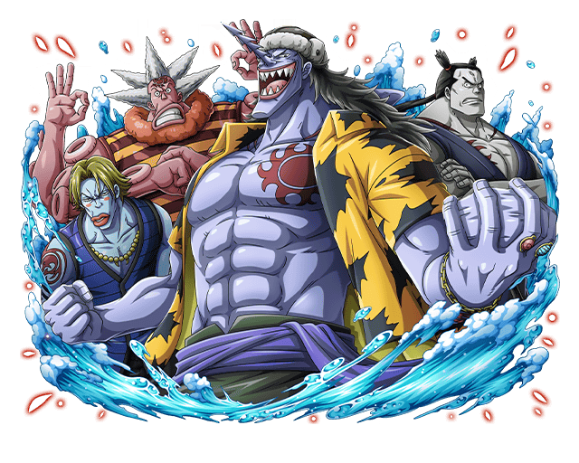
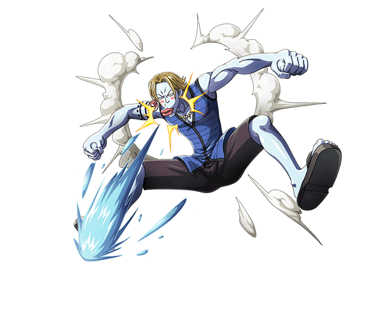

<!DOCTYPE html>
<html lang="pt-bt">
    <link rel="stylesheet" href="style.css">
<head>
    <meta charset="UTF-8">
    <meta name="viewport" 
    content="width=device-width, initial-scale=1.0">
    <title>D&D One Pice Br</title>
    


</head>


<body>

    <div class="header">  
        <div class="logo">
             
            <h1>D&D One Piece Br</h1>
        </div>

        
        <nav class="navegaçao">
            <ul>
                <li class="Raças">
                    <a href="" id="topo">Raças</a>
                    <div class="MenuRaça">
                        <div class="MenuRaças">
                            <a href="#Humano">Humano</a>
                            <a href="#Homem-peixe">Homem-Peixe</a>
                            <a href="#Tritão">Tritão</a>
                            <a href="#Ilha do Céu">Ilha do Céu</a>
                            <a href="#Mink">Mink</a>
                            <a href="#Homem da Tribo Yokai">Homem da Tribo Yokai</a>
                            <a href="#Ciborgue">Ciborgue</a>
                            <a href="#Anão [Opcional]">Anão [Opcional]</a>
                            <a href="#Lunar [Opcional]">Lunar [Opcional]</a>
                            <a href="#Gigante Elbaf [Opcional]">Gigante Elbaf [Opcional]</a>
    
                        </div>
                    </div>
                    
                </li>
                <li class="Classes">
                    <a href="">Classes</a>
                    <div class="MenuClasse">
                        <div class="MenuClasses">
                            <a href="#Bruiser">Bruiser</a>
                            <a href="#Químico">Químico</a>
                            <a href="#">Forjado pelo Diabo</a>
                            <a href="#">Híbrido</a>
                            <a href="#">Atirador</a>
                            <a href="#">Artista Marcial</a>
                            <a href="#">Sacerdote</a>
                            <a href="#">Ladino</a>
                            <a href="#">Escalda</a>
                            <a href="#">Consertador</a>
                            <a href="#">Guerreiro</a>
                </li>
            </ul>

        </nav>
        
    </div>

    <div class="topo">
        <a href="#topo"></a>
 
    </div>

    <div class="caixas">
        <div class="caixa1">
            <h2> Bem Vindo Jogador(a)!</h2>
            <p style="text-align: center;
                      margin-left: 0px;
                      margin-right: 0px;">
            <br> Nesta taverna te ensinaremos como criar um 
                personagem de One Piece em Dungeons in Dragons.
            <br>Você aprendera Raças, Classes, 
            Itens, Akumas no mi, entre outros... e tudo adaptado. </p>
        </div>
    </div>

    <div class=" caixas1">
        <div class="caixa2">
            <h2> Por onde começar?</h2>
            <p>
                <br> ㅤComece pensando em qual raça ou classe escolher,
                    vamos usar nosso protagonista Monkey D. Luffy como exemplo.
                    <br>
            </p>

            <div class="caixa3">
                <p>
                    <strong>Raças:</strong> Humano variante
                <br><strong>Classes:</strong> Artista marcial 
                <br><strong>Akuma no Mi:</strong> Fruta da Borracha
            </p>
            </div>

            <p><br><br><br><br><br>
                ㅤ Para a criação do luffy, foi escolhido humano variante como raça,
            esse personagem é mais luta corporal, então a classe escolhida foi artista marcial.
            Luffy ja iniciou sua jornada com uma akuma no mi, se caso você queira iniciar com uma,
            deve pedir ao seu mestre e ele sorteara uma akuma no mi parar você.</p>
            <p>
                <br>Veja agora algumas raças e classes para criação do seu personagem:
            </p>

        </div>
    </div>
    <div class="caixas2">
        <div class="caixa2">
            <h2 id="Raças">Raças/Classes</h2>
            <p><br><br>Humano
                <br>Homem-Peixe
                <br>Tritões
                <br>Ilha do Céu
                <br>Mink
                <br>Homem da Tribo Yokai
                <br>Ciborgue
                <br>Anão [Opcional]
                <br>Lunar [Opcional]
                <br>Gigante Elbaf [Opcional]</p>
            <p style="margin-left: 200px; margin-top: -200px;text-align: end;">
                <br>Bruisador
                <br>Químico
                <br>Forjado pelo Diabo
                <br>Híbrido
                <br>Atirador
                <br>Artista Marcial
                <br>Sacerdote
                <br>Ladino
                <br>Escalda
                <br>Consertador
                <br>Guerreiro
            </p>    
        </div>
    </div>
    <div class="caixas2">
        <div class="caixa2">
            <h2 id="Humano">Humano
                <br>
            </h2>         


            <p>ㅤNo mundo de One Piece, os humanos podem ser considerados altamente invasivos e territoriais para a maioria das outras raças e 
                criaturas. Embora existam muitos humanos de bom espírito por aí, o Governo Mundial e a Marinha muitas vezes mancham a 
                reputação dos humanos entre os não-humanos. Devido a este fato, a maioria das raças não-humanas não se dá bem com os humanos, 
                em média. No entanto, pode muito bem haver fraternidade entre estas raças em certas circunstâncias, desde que seja demonstrada 
                compaixão e amizade.</p>
            <p>ㅤ <strong>Conquistadores.</strong> Os humanos se estabelecerão e assumirão o controle de praticamente qualquer lugar que puderem alcançar. A 
                exceção a esta regra pode ser lugares como a Ilha dos Homens-Peixe ou Zou, que são muito inconvenientes e fora do alcance da 
                maioria das civilizações humanas. A maior parte do mundo é conquistada e governada por humanos sob o Governo Mundial.</p>
            <P>ㅤ<STrong>Grandes Reinos.</STrong> À medida que os humanos se expandiram ao longo dos séculos, estabeleceram muitas grandes cidades, reinos e 
                fortalezas em várias ilhas e continentes. A cultura humana também pode ser muito diferente dependendo de onde você olha. Embora 
                alguns assentamentos humanos possam ter uma mente mais aberta e receptiva, outros lugares podem ser muito menos tolerantes com 
                pessoas de fora e com ideias ou culturas diferentes.</P>
            <H3><br>Traços Humanos</H3>
            <p><br>Embora muitos humanos variem em forma e tamanho, seu caráter humano terá essas características.
                <br><strong>Aumento da pontuação de habilidade.</strong> Seus valores de habilidade aumentam em 1.
                <br><strong>Idade.</strong> Os humanos atingem a idade adulta na adolescência e vivem cerca de um século.
                <br><strong>Alinhamento.</strong> Não existe um alinhamento claro que seja consistente entre todos os humanos. Praticamente qualquer alinhamento 
                pode ser justificado.
                <br><strong>Tamanho.</strong> Os humanos no mundo de One Piece têm normalmente de 5 a 6 pés de altura. Alguns podem ficar bem fora dessa faixa, 
                mas seu tamanho será considerado médio.
                <br><strong>Velocidade.</strong> Sua velocidade básica de caminhada é de 9 metros.</p>
            <h4><br>Características da variante humana
                <br></h4>
                <p>Alguns humanos podem ser visivelmente diferentes em suas habilidades. Por esse motivo, você pode optar por 
                    substituir o Aumento de Pontuação de Habilidade Humana padrão por estas características:
                    <br><strong>Aumento da pontuação de habilidade.</strong> Dois valores de habilidade diferentes, à sua escolha, aumentam em 1.
                    <br><strong>Habilidades.</strong> Você ganha proficiência em uma habilidade de sua escolha.
                    <br><strong>Façanha.</strong> Você ganha um Talento de Personagem à sua escolha que atende aos pré-requisitos do Talento. Você só pode 
                    escolher um talento relacionado ao Haki se receber permissão do Mestre.</p>
            <h4><br>Traços de Gigante Humano
            <br></h4>
                <p>Muito raramente, alguns humanos podem crescer surpreendentemente maiores do que a maioria dos outros no mundo de One Piece, 
                    às vezes até dobrando a altura e o peso humanos médios. Se o seu personagem humano se enquadrar nesta categoria, você pode optar
                    por substituir o Aumento de Pontuação de Habilidade Humana padrão por estas características:
                    <br><strong>Aumento da pontuação de habilidade.</strong> Você aumenta seu valor de Força em 2.
                    <br><strong>Tamanho.</strong> Os gigantes humanos têm entre 2 e 2,5 metros de altura e pesam entre 280 e 340 libras. Seu tamanho é Médio.
                    <br><strong>Atleta Natural.</strong> Você tem proficiência na perícia Atletismo.
                    <br><strong>Treinamento de Guerreiro.</strong> Você tem proficiência com Machado de Batalha, Machado de Mão, Martelo Leve, Espada Longa, 
                    Porrete e Lança.
                    <br><strong>Resistência do Gigante.</strong> Você pode se concentrar para ocasionalmente evitar lesões. Ao sofrer dano, você pode usar sua reação 
                    para rolar um d12. Adicione seu modificador de Constituição ao número obtido e reduza o dano nesse total. Depois de usar esta 
                    característica, você não poderá usá-la novamente até terminar um descanso curto ou longo.
                    <br><strong>Construção poderosa.</strong> Você conta como um tamanho maior ao determinar sua capacidade de carga e o peso que pode empurrar, 
                    arrastar ou levantar.</p>

            <h4><br>Traços de Kuja
            <br></h4>
            <p>Se seu personagem humano for feminino, você pode escolher esta sub-raça variante Kuja. Se fizer isso, você pode optar por substituir
                o Aumento de Pontuação de Habilidade Humana padrão por estas características:
                <br><strong>Aumento da pontuação de habilidade.</strong> Você aumenta seu valor de Constituição, Sabedoria ou Carisma em 2.
                <br><strong>Habilidades.</strong> Você ganha proficiência com arcos longos, arcos curtos, espadas curtas e lanças.
                <br><strong>Haki iniciante.</strong> Você pode escolher o talento Treinamento da Cor do Armamento se atender ao pré-requisito.
                </p>


            </div>

    </dIv>
    <div class="caixas2">
        <div class="caixa2">
            <h2 id="Homem-peixe">Homem-peixe
                <br>
            </h2>
            <p>Os Homens-Peixe, junto com os Tritões, são uma das duas raças de humanóides que habitam o mar. Os homens-peixe 
                são uma mistura aproximadamente igual de humanos e peixes, com apêndices semelhantes aos humanos e rostos 
                cruzados com criaturas marinhas, como tubarões, baiacu e outros peixes. Eles também têm guelras entre os ombros e 
                pescoço, além de muitas vezes terem mãos palmadas. Algumas espécies de homens-peixe podem ter apêndices extras 
                dependendo da espécie de peixe que representam.
                Os homens-peixe têm pulmões e guelras, o que lhes permite respirar debaixo d'água e em terra. Seus dedos palmados e 
                corpos ágeis permitem que eles se movam rapidamente na água pelo tempo que quiserem. Alguns homens-peixe usam 
                seus corpos naturalmente fortes e características únicas como razão para acreditar que são superiores aos 
                humanos. Apesar dessas crenças, os homens-peixe muitas vezes acabam sendo escravizados e oprimidos pelos 
                humanos, o que aumenta ainda mais o seu ódio por eles. No entanto, nem todos os homens-peixe pensam desta forma e 
                podem realmente se dar bem com os humanos como iguais.
                <br><strong>Híbridos.</strong> Homens-peixe têm a habilidade de cruzar com outras raças, assim como outras raças humanóides. Não é 
                impossível encontrar homens-peixe meio-humanos ou meio-gigantes em locais como a grand line. Além disso, os 
                homens-peixe podem ter filhos com tritões, resultando no nascimento de um homem-peixe ou de um tritão.
                <br><strong>Oprimido.</strong> Tal como outras raças não-humanas, os homens-peixe são vítimas da opressão mundial por parte dos 
                humanos. Devido a isso, muitos homens-peixe permanecem dentro dos limites da ilha dos homens-peixe e só saem 
                ocasionalmente. Alguns homens-peixe malvados optaram por ser piratas em busca de vingança contra a 
                humanidade. Infelizmente, muitos também acabam como escravos sob o governo mundial. Mesmo nas ilhas que não 
                estão directamente sob a jurisdição do governo mundial, os humanos ainda tratam os homens-peixe de forma muito 
                injusta. Por esta razão, brincar de homem-peixe pode ser muito diferente ao visitar várias ilhas habitadas por humanos 
                ao redor do mar.
                <br><strong>Dominação.</strong> Embora muitas vezes sejam mal compreendidos, muitos homens-peixes acreditam que deveriam governar 
                todos os outros peixes do mar. E devido ao tratamento cruel que recebem dos humanos, alguns passam a querer também
                conquistar e governar a humanidade como um todo. Porém, isso não é verdade para todos os homens-peixe, já que 
                muitos exibem o desejo de coexistir com outras raças e espécies.
                <br><strong>Força Extraordinária.</strong> Além de nascerem com corpos que fornecem armas naturais em batalhas, como dentes afiados, 
                os homens-peixe têm corpos incrivelmente fortes em comparação com as pessoas comuns. Desde o nascimento, os 
                homens-peixe são dez vezes mais fortes que os humanos. Além disso, os homens-peixe podem ser ainda mais 
                problemáticos em combates subaquáticos. Sendo ainda mais fortes debaixo d'água, eles podem facilmente devastar um 
                ser humano que não seja proficiente em natação. Infelizmente, essa força pode ser anulada se um homem-peixe for um 
                usuário de Akuma no Mi.</p>
            
            <h3><br>Traços do Homem-Peixe</h3>
            <p><strong>Aumento da pontuação de habilidade.</strong> Sua pontuação de constituição aumenta em 1.
                <br>Idade. Os homens-peixe atingem a idade adulta na adolescência e vivem cerca de um século.
                <br><strong>Alinhamento.</strong> A maioria dos homens-peixe são leais e muitos permanecem fiéis aos seus valores, embora alguns 
                tendam a ser neutros. Os homens-peixe podem viver em harmonia com outras criaturas marinhas, mas podem tornar-se 
                violentos contra os humanos. Por esta razão, um homem-peixe pode variar de bom a mau.
                <br><strong>Tamanho.</strong> Os homens-peixe têm entre 2 e 2,5 metros de altura e pesam entre 280 e 340 libras em média. Seu tamanho é
                médio.
                <br><strong>Velocidade.</strong> Seu deslocamento básico de caminhada é de 9 metros e seu deslocamento de Natação é de 9 metros.
                <br><strong>Anfíbio.</strong> Você pode respirar ar e água.
                <br><strong>Atleta Subaquático.</strong> Você tem proficiência na perícia Atletismo. Enquanto estiver debaixo d'água, você não enfrenta 
                nenhuma penalidade ou desvantagem como resultado das regras de combate subaquático.
                <br><strong>Adaptado ao Mar.</strong> Com a capacidade de se adaptar a profundidades subaquáticas extremas, você tem resistência a 
                danos causados pelo frio.
                </p>
            <h3><br>Sub-raças do Homem-Peixe</h3>
            <p><strong>Sub-raça.</strong> A reprodução entre peixes resultou em três sub-raças principais: variantes Tubarão, Raia Manta, Polvo ou 
                Badejo. Escolha uma dessas sub-raças e adicione suas características às suas características raciais junto com as listadas
                acima.</p>

            <h4><br>Traços de tubarão
            <br></h4>
            <p>Esses homens-peixe são conhecidos por terem dentes afiados como os de tubarão, pele azul clara, nadadeiras traseiras 
                grandes e força extrema.
                <br><strong>Aumento da pontuação de habilidade.</strong> Seu valor de Força aumenta em 2.
                <br><strong>Ápice do Predador.</strong> Você tem proficiência na habilidade Intimidação.
                <br><strong>Morder.</strong>Seus dentes afiados são uma arma natural, que você pode usar para realizar ataques desarmados. Se acertar, 
                você causa dano perfurante igual a 1d6 + seu modificador de Força, em vez do dano de concussão normal para um 
                Ataque Desarmado.</p>
            
            <h4><br>Características da arraia manta
                <br>
            </h4>
            <p>Esses homens-peixe são conhecidos por terem barbatanas laterais largas e pele azul-clara, movendo-se em alta 
                velocidade debaixo d’água.
                <br><strong>Aumento da pontuação de habilidade.</strong> Seu valor de Destreza aumenta em 2.
                <br><strong>Acrobacia Subaquática.</strong> Você ganha proficiência na perícia Acrobacia. Você tem vantagem em testes de acrobacias 
                feitos debaixo d'água.
                <br><strong>Deslizamento Marítimo.</strong> Você tem um deslocamento de Natação de 12 metros</p>

            <h4><br>Características do polvo
                <br>
            </h4>
            <p>Os homens-peixe polvo tendem a ter seis braços e pele vermelha ou marrom, com muita flexibilidade com seus 
                múltiplos apêndices.
                <br><strong>Aumento da pontuação de habilidade.</strong> Seus valores de Força e Destreza aumentam em 1.
                <br><strong>Precisão Mortal.</strong> Você ganha proficiência em um dos seguintes: prestidigitação ou uma ferramenta de artesão de sua 
                escolha.
                <br><strong>Multi-armado.</strong> Você tem quatro braços adicionais, seis no total. Embora você não possa manejar armas de maneira 
                eficiente com essas armas, você pode usá-las para guardar itens menores, como poções e bugigangas. Além disso, você 
                tem vantagem em testes de agarrar com os braços.</p>

            <h4><br>Características do badejo
            </h4><br>
            <p>Os homens-peixe são conhecidos por terem características de peixe mais dominantes em comparação com outros 
                homens-peixe e podem cuspir água em seus inimigos.
                <br><strong>Aumento da pontuação de habilidade.</strong> Seu valor de Carisma aumenta em 2.
                <br><strong>Boca Grande.</strong> Você ganha proficiência na perícia Enganação ou Persuasão (sua escolha).
                <br><strong>Hydro Cannon.</strong> Você tem a habilidade natural de disparar rajadas concentradas de água pela boca. Você pode lançar 
                raio de gelo com esta característica. A partir do 3º nível, você pode lançar Ice Knife com ela. Depois de lançar um 
                feitiço com esta característica, você não poderá conjurar aquele feitiço novamente até terminar um descanso 
                longo. Carisma é sua habilidade de lançar feitiços para esses feitiços.</p>


        </div>
    </div>


    <div class="caixas2"> 
        <div class="caixa2">
            <h2 id="Tritão">Tritão
                <br>
            </h2>
            <p>Os tritões, junto com os homens-peixe, são uma das duas raças de humanóides que habitam o mar. Os tritões têm a parte superior do 
                corpo de um humano e a parte inferior de um peixe. Ambas as raças são governadas pelo rei submarino, Rei Netuno.
                Os tritões têm acesso a várias habilidades debaixo d'água, como velocidades de natação extremamente rápidas, proficiência em armas
                e a capacidade de se comunicar com muitas criaturas marinhas. Muito raramente, uma sereia pode nascer com a habilidade de falar 
                com os Reis dos Mares. Porém, apenas uma princesa sereia possui esse poder.
                <br><strong>Pacífico.</strong> Ao contrário dos homens-peixe, os tritões são muito mais pacíficos e preferem viver em segredo, longe da maioria das 
                outras raças. Apesar de suas diferenças, tritões e homens-peixe se dão muito bem.
                <br><strong>Mar para Terra.</strong> Devido à falta de pernas, movem-se muito lentamente em terra. Isso faz das viagens marítimas seu principal 
                método de locomoção, e eles são muito proficientes nisso. Porém, ao completar 30 anos, suas caudas se dividirão e permitirão que 
                caminhem em terra com muito mais facilidade.
                <br><strong>Vítimas da Escravidão.</strong> Apesar dos seus esforços para se manterem longe da superfície, alguns tritões ainda acabam capturados e
                vendidos como escravos. Devido à sua raridade, muitos podem ser vendidos por preços incrivelmente altos se tiverem menos de 30 
                anos.
                <br><strong>Beleza e Graça.</strong> Os tritões são considerados incrivelmente bonitos pelos padrões humanos. Essa beleza se perde principalmente 
                quando chegam aos 30 anos, quando sua cauda se divide. Eles também são muito menos brutais do que os homens-peixe, o que os 
                torna um pouco menos propensos a se envolverem em altercações físicas. Os tritões estão mais comumente envolvidos em atividades 
                ou ocupações que envolvem sua velocidade ou inteligência. Porém, muitos ainda são treinados no exército e podem usar um estilo de
                luta conhecido como Merman Combat</p>
            <h3><br>Traços dos Tritões
            </h3>
            <p>Seu personagem tritão terá essas características.
                <br><strong>Aumento da pontuação de habilidade.</strong> Seus valores de Destreza, Sabedoria e Carisma aumentam cada um em 1.
                <br><strong>Idade.</strong> Os tritões atingem a idade adulta na adolescência, amadurecem consideravelmente aos 30 anos e vivem cerca de um século.
                <br><strong>Alinhamento.</strong> A maioria dos tritões são neutros ou leais e bons. No entanto, poucos podem tornar-se violentos contra os humanos e
                tornar-se maus. Eles raramente são de natureza caótica.
                <br><strong>Tamanho.</strong> Os tritões têm entre 6 e 7 pés de comprimento e pesam entre 160 e 240 libras em média. Seu tamanho é médio.
                <br><strong>Velocidade.</strong> Seu deslocamento básico de caminhada é de 3 metros e seu deslocamento de Natação é de 15 metros. Quando você 
                chega aos 30 anos como mulher, sua velocidade de caminhada passa a ser de 9 metros.
                <br><strong>Anfíbio.</strong> Você pode respirar ar e água.
                <br>Treinamento Merfolk . Você tem proficiência com lança, tridente e rede.
                <br><strong>Combate Tritão.</strong> Sendo treinado em combate subaquático, você pode controlar o fluxo de água para atacar seus inimigos (danos 
                de gelo e frio são tratados como água). Você pode lançar Ray of Frost com esta característica. A partir do 3º nível, você pode lançar 
                Ice Knife com ela, e a partir do 5º nível, você também pode lançar Rime's Binding Ice com ela. Depois de lançar um feitiço com esta 
                característica, você não poderá conjurar aquele feitiço novamente até terminar um descanso longo. Carisma é sua habilidade de 
                lançar feitiços para esses feitiços.
                <br><strong>Adaptado ao Mar.</strong> Com a capacidade de se adaptar a profundidades subaquáticas extremas, você tem resistência a danos causados
                pelo frio.
                <br><strong>Línguas.</strong> Todos os tritões podem falar e compreender a língua falada universal deste mundo. Além disso, usando gestos e sons, você
                pode comunicar ideias simples com qualquer animal que tenha uma velocidade inata de natação.
                </p>
        </div>
    </div>


    <div class="caixas2">
        <div class="caixa2">
            <h2 id="Ilha do Céu">Ilha do Céu
                <br>
            </h2>
            <p>
                Aqueles que vivem nas Sky Islands adaptaram-se e ajustaram-se para viver num ambiente assim. Existem três facções 
principais aqui: Shandians, Birkans e Skypieans. Todos esses três grupos descendem de uma lua, às vezes chamada de 
"Fairy Vearth". Nesta lua, existia uma grande civilização chamada Shandoria. Esses três grupos faziam parte desta 
civilização e acreditava-se que trabalhavam em uníssono.
Séculos depois de deixarem a Lua, essas raças se separaram e podem ser consideradas, em sua maioria, divididas em 
diferentes tribos. Essas tribos agora vivem principalmente nas Ilhas Celestiais e formam civilizações nas nuvens com 
suas próprias culturas e tecnologia. Alguns usam um poder aparentemente mágico chamado Mantra, que na verdade é 
Observação Haki.
Alguns ilhéus do céu descem do céu para a terra, conhecidos como "Vearth" para eles, e podem interagir com várias 
outras raças.
Essas três tribos podem ser descritas das seguintes maneiras.
            </p>
            <h3><br>Shandianos</h3>
            <p>Depois que os Shandians desceram da lua, eles viveram em uma ilha terrestre chamada Jaya. No entanto, esta ilha foi 
                lançada ao céu por um riacho, deixando os Shandians presos no céu por muitos séculos. Como os outros que vivem 
                nessas ilhas celestes, os Shandians são conhecidos por terem asas nas costas. No entanto, ao contrário dos outros 
                grupos, suas roupas são semelhantes às dos nativos americanos do mundo real. Além disso, muitas vezes eles podem ser
                vistos com grandes tatuagens decorando seus corpos. Shandians lutam como guerreiros ferozes e habilidosos, 
                sobrevivendo por muitos séculos com essas habilidades.
                Nos tempos antigos, os Shandians lutaram em uma grande guerra contra os vinte reinos terrestres. No final desta guerra,
                eles foram derrotados. No entanto, eles mantiveram as ruínas da cidade dourada de Shandora e do Sino do Campanário 
                Dourado de Shandorian, que eles agora protegem com suas vidas, mesmo depois de ter sido lançado ao céu há muito 
                tempo. Eles também protegem um Poneglyph deixado a eles por um antigo Grande Reino do qual foram aliados durante
                a grande guerra.</p>

                <h3><br>Birkanenses</h3>
                <p>Embora não se saiba muito sobre esta civilização, ela compartilha algumas semelhanças com outros grupos de Sky 
                    Island. Assim como os outros dois grupos, todos os Birkans têm asas nas costas. No entanto, os Birkans têm uma 
                    aparência única em comparação com os outros. Às vezes, os Birkans podem parecer ter características de cabra, como 
                    longas orelhas de cabra crescendo ao lado de suas orelhas humanas normais e chifres pequenos.
                    Além disso, muitos Birkans vestem longas túnicas e vestidos brancos, muitas vezes lembrando sacerdotes. Muitos 
                    birkans se consideram de natureza divina e se vestem de acordo. Infelizmente, a ilha de Birka foi destruída há muitos 
                    anos, embora ainda restem muitos sobreviventes. Muitos sobreviventes de Birkan são dotados de um forte mantra em 
                    combate.</p>
                <h3><br>Skypieanos</h3>
                <p>Muitos Skypieans residem na ilha do céu conhecida como Skypiea. Esta ilha é enorme e contém diversas tecnologias 
                    que fazem uso de Dials, que se encontram naturalmente ao seu redor. Muitos Skypieans têm aparência de anjo e têm 
                    asas nas costas, semelhantes aos Birkans e Shandians. Além disso, seu cabelo muitas vezes lembra a antena de um 
                    inseto, sua pele é muito mais clara que a dos outros grupos e suas roupas são muito mais básicas.
                    Skypiea é uma grande ilha que aos poucos começou a se ressentir dos estrangeiros devido aos danos causados a eles por
                    não-skypieanos. Eles usam uma moeda conhecida como Extol no lugar de Belly (฿). Todos os Skypieans obedecem 
                    totalmente ao seu grande líder, conhecido como “Deus”.
                    </p>
                <h3><br>Traços das Ilhas do Céu</h3>
                <p>Seu ilhéu do céu terá essas características.
                    <br><strong>Aumento da pontuação de habilidade.</strong> Seu valor de Destreza aumenta em 1.
                    <br><strong>Idade.</strong> Os ilhéus do céu atingem a idade adulta na adolescência e vivem cerca de um século.
                    <br><strong>Alinhamento.</strong> Os ilhéus celestes variam em alinhamento, indo do bom ao mal, do lícito ao caótico, mas são tipicamente
                    neutros de alguma forma.
                    <br><strong>Tamanho.</strong> Os ilhéus do céu no mundo de One Piece têm normalmente de 1,5 a 1,8 m de altura. Alguns podem ficar 
                    bem fora dessa faixa, mas seu tamanho será considerado médio.
                    <br><strong>Velocidade.</strong> Sua velocidade básica de caminhada é de 9 metros.
                    <br><strong>Proteção das Nuvens.</strong> Você é capaz de formar nuvens flutuantes e fofas ao seu redor para reduzir a velocidade de sua 
                    queda. Você ganha a habilidade de lançar Feather Fall. Depois de usar esta habilidade, você não poderá usá-la 
                    novamente até completar um descanso curto ou longo.
                    <br><strong>Proficiência em discagem.</strong> Você entende inatamente os mostradores que vieram das ilhas do céu e pode carregá-los 
                    com você. Role uma vez na Tabela de Discagem Simples no Capítulo 5 para determinar com qual você começa
                    <br><strong>Línguas. </strong>Todos os ilhéus do céu podem falar e compreender a língua falada universal deste mundo.
                </p>
                <h3><br>Sub-raças das Ilhas Celestes</h3>
                <p><strong>Sub-raça.</strong> A separação dos grupos que viviam no "Fairy Vearth" resultou na divisão de três sub-raças principais: 
                    variantes Shandian, Birkan ou Skypiean. Escolha uma dessas sub-raças e adicione suas características às suas 
                    características raciais junto com as listadas acima.
                    </p>

                <h4><br>Shandianos
                <br></h4>
                <p>Sua herança Shandian lhe dotou de grande força e experiência em combate.
                    <br><strong>Aumento da pontuação de habilidade.</strong> Seu valor de Força aumenta em 2.
                    <br><strong>Treinamento com Arma Shandian.</strong> Você tem proficiência com bastão, alabarda, lança, glaive, lança e armas de fogo 
                    pesadas</p>

                <h4><br>Birkanenses
                    <br>
                </h4>
                <p>Sua herança Birkan dotou você de observação e previsão poderosas por meio do mantra.
                    <br><strong>Aumento da pontuação de habilidade.</strong> Seu valor de Sabedoria aumenta em 2.
                    <br><strong>Especialista em Mantras.</strong> Você pode optar pelo talento Treinamento Cor da Observação se atender ao pré-requisito.</p>
                <h4><br>Skypieanos
                    <br>
                </h4>
                <p>Sua herança Skypiean dotou você de um grande conhecimento sobre mostradores.
                    <br><strong>Aumento da pontuação de habilidade.</strong> Seu valor de Inteligência aumenta em 2.
                    <br><strong>Proficiência de discagem avançada.</strong> Você começa com um Dial adicional, permitindo que você role mais uma vez na 
                    Tabela de Discagem Simples para determinar com qual outro Dial você começa. Além disso, você ganha vantagem em 
                    todos os testes feitos para encontrar um mostrador.</p>
        </div>
    </div>


    <div class="caixas2">
        <div class="caixa2">
            <h2 id="Mink">Mink
                <br>
            </h2>
            <p>Assim como os homens-peixe e os tritões, os visons parecem ter uma mistura de características humanas e animais. Cada vison se 
                assemelha a um certo tipo de animal mamífero peludo. Suas características e apêndices são muito semelhantes aos humanos, mas 
                geralmente têm patas e patas acolchoadas. Os visons machos parecem muito mais bestiais e peludos, enquanto os visons fêmeas 
                parecem mais humanos.
                <br><strong>Força do Reino Animal.</strong> Eles são considerados temíveis e poderosos por muitos, e com razão. Minks nascem com imenso poder, 
                velocidade, furtividade e instintos. Suas habilidades são muito superiores às dos humanos comuns, mesmo em tenra idade. Cada 
                vison, independentemente de ser jovem ou velho, é um guerreiro poderoso na batalha. Este poder é muito elevado quando sua Forma 
                Sulong é ativada sob a lua cheia.
                <br><strong>Vítimas da Escravidão.</strong> Tal como muitas outras raças não-humanas, os Minks são por vezes vítimas de escravatura e são 
                valorizados pela sua aparência exótica e força. Além disso, muitos humanos podem tratar os visons com ódio semelhante ao modo 
                como tratam outros não-humanos. Isto pode levar a algum grau de ressentimento entre ambas as raças, embora provavelmente não 
                tão extremo como certos homens-peixe. Muitos visons têm a capacidade de se dar bem com os humanos se houver algum nível de 
                compreensão e respeito.
                <br><strong>Residentes de Zou.</strong> A maioria dos visons reside em uma cidade no topo de um antigo elefante do tamanho de uma ilha chamado 
                Zunesha. Esta cidade é conhecida como Zou, que existe em algum lugar do Novo Mundo. Esta cidade é incrivelmente difícil de 
                localizar, permitindo que os visons vivam longe dos piratas e do alcance do Governo Mundial. No entanto, alguns visons se 
                aventuram fora de Zou, às vezes como piratas, ou decidem viver em Totto Land</p>
            
            <h3><br>Traços de mink</h3>
            <p>Seu vison terá essas características.
                <br><strong>Aumento da pontuação de habilidade.</strong> Seus valores de Força, Destreza e Sabedoria aumentam cada um em 1.
                <br><strong>Idade.</strong> Os visons atingem a idade adulta na adolescência e vivem cerca de um século.
                <br><strong>Alinhamento.</strong> A maioria dos visons são neutros ou legais. No entanto, poucos podem se tornar caóticos e ceder aos seus impulsos 
                primordiais se forem expostos à lua cheia por tempo suficiente.
                <br><strong>Tamanho.</strong> Os visons no mundo de One Piece têm normalmente de 1,5 a 1,8 m de altura. Alguns podem ficar bem fora dessa faixa, 
                mas seu tamanho será considerado médio.
                <br><strong>Velocidade.</strong> Sua velocidade básica de caminhada é de 9 metros.
                <br><strong>Visão no escuro.</strong> Você tem os sentidos aguçados de um animal, especialmente no escuro. Você pode ver na penumbra a até 18 
                metros de você como se fosse uma luz brilhante, e na escuridão como se fosse uma luz fraca. Você não consegue discernir cores na 
                escuridão, apenas tons de cinza.
                <br><strong>Corte da Besta.</strong> Por causa de suas características de fera, você tem uma velocidade de escalada de 6 metros. Além disso, seu corpo
                é uma arma natural, que você pode usar para realizar ataques desarmados. Você pode escolher causar cortes em seus ataques 
                desarmados, e seus dados de dano de ataque desarmado se tornam no mínimo 1d6.
                <br><strong>Instinto animal.</strong> Você tem proficiência nas habilidades de Percepção e Furtividade.
                <br><strong>Eletro.</strong> Você conhece o truque Aperto Chocante. Sabedoria é a sua habilidade de lançar feitiços para este feitiço. Além disso, você é 
                resistente a danos causados por raios.
                <br><strong>Transformação Sulong.</strong> A partir do 3º nível, você pode usar sua ação para canalizar a energia do luar para seu corpo e se 
                transformar em uma poderosa forma primal branca e brilhante com cabelos mais longos e tamanho aprimorado, reforçando sua força,
                velocidade e eletro.
                Sua transformação dura 1 minuto ou até você finalizá-la como uma Ação Bônus. Durante isso, sua velocidade aumenta em 3 metros, 
                você tem vantagem em testes de força e, uma vez em cada um de seus turnos, você pode causar dano elétrico extra a um alvo ao 
                causar dano a ele com um Ataque ou um feitiço. O dano elétrico extra é igual ao seu nível.
                Depois de usar essa característica, você não poderá usá-la novamente até terminar um descanso longo</p>

        </div>
 
    </div>


    <div class="caixas2">
        <div class="caixa2">
            <h2 id="Homem da Tribo Yokai">Homem da Tribo Yokai
                <br>
            </h2>
            <p>Existem várias raças de tribos semelhantes aos humanos que possuem características muito moderadas ou exageradas que as 
                diferenciam das pessoas normais. Essas raças são chamadas de tribos yokai (embora não oficialmente), devido à sua semelhança com
                certos yokai do folclore japonês. Muito se sabe sobre essas tribos no mundo de One Piece.
                Existem três tipos principais de tribos yokai para escolher: a tribo das pernas longas, a tribo dos braços longos e a tribo dos três olhos.
                </p>
            <h3><br>Traços do homem da tribo Yokai</h3>
            <p>Seu membro da tribo yokai terá essas características.
                <br><strong>Aumento da pontuação de habilidade.</strong> Seu valor de Carisma aumenta em 1.
                <br><strong>Idade.</strong> Os membros da tribo Yokai atingem a idade adulta na adolescência e vivem cerca de um século.
                <br><strong>Alinhamento.</strong> Os membros da tribo Yokai exibem vários alinhamentos, mas muitos são vistos como maus. No entanto, qualquer 
                alinhamento pode ser razoavelmente escolhido.
                <br><strong>Carisma Tribal.</strong> O orgulho de sua raça e características deixaram você incrivelmente confiante nas conversas. Você tem 
                proficiência nas perícias Intimidação e Persuasão.
                <br><strong>Astuto.</strong> Você ganha proficiência em uma ferramenta ou instrumento de sua escolha</p>
        
            <h3><br>Sub-raças dos homens da tribo Yokai</h3>
            <p><strong>Sub-raça.</strong> Existem diversas variantes de membros da tribo yokai: os membros da tribo de pernas longas, os membros da tribo de 
                braços longos e os membros da tribo de três olhos. Escolha uma dessas sub-raças e adicione suas características às suas 
                características raciais junto com as listadas acima.
                </p>

            <h4><br>Tribo Perna Longa
                <br>
            </h4>
            <p>Seu membro da tribo de pernas longas foi dotado de magníficas pernas longas que lhes conferem as seguintes características.
                <br><strong>Aumento da pontuação de habilidade.</strong> Seu valor de Destreza aumenta em 2.
                <br><strong>Tamanho.</strong> Os membros da tribo Longleg no One Piece World têm normalmente de 2 a 2,5 metros de altura. Alguns podem ficar 
                bem fora dessa faixa, mas seu tamanho será considerado médio.
                <br><strong>Velocidade.</strong> Sua velocidade básica de caminhada é de 35 pés.
                <br><strong>Passo Longo.</strong> Suas pernas enormes permitem que você se mova com uma explosão de velocidade. Ao avançar no Seu Turno em 
                Combate, você pode dobrar sua velocidade até o final do turno. Depois de usar esta característica, você não poderá usá-la novamente 
                até que você se mova 0 metro em um de seus turnos.
                </p>
                
                <h4><br>Homem da Tribo Longarm
                <br>
            </h4>
            <p>Seu membro da tribo de braço longo foi dotado de braços longos e esguios que conferem imensa força e alcance.
                <br><strong>Aumento da pontuação de habilidade.</strong> Seu valor de Força aumenta em 2.
                <br><strong>Tamanho.</strong> Os membros da tribo Longarm no One Piece World têm normalmente de 1,5 a 1,8 m de altura. Alguns podem ficar bem 
                fora dessa faixa, mas seu tamanho será considerado médio.
                <br><strong>Velocidade.</strong> Sua velocidade básica de caminhada é de 9 metros.
                <br><strong>Membros Longos.</strong> Quando você realiza um ataque corpo a corpo no seu turno, seu alcance é 1,5 metro maior que o normal.
                <br><strong>Construção poderosa.</strong> Você conta como um tamanho maior ao determinar sua capacidade de carga e o peso que pode empurrar, 
                arrastar ou levantar.</p>
        
            <h4><br>Homem da tribo pescoço de cobra
                <br>
            </h4>
            <p>Seu membro da tribo com pescoço de cobra é dotado de um pescoço muito longo, semelhante ao de uma cobra.
                <br><strong>Aumento da pontuação de habilidade.</strong> Seu valor de Inteligência aumenta em 2.
                <br><strong>Tamanho.</strong> Os membros da tribo Snakeneck no One Piece World têm normalmente de 6 a 8 pés de altura devido ao seu pescoço 
                <br><strong>longo.</strong> Alguns podem ficar bem fora dessa faixa, mas seu tamanho será considerado médio.
                <br><strong>Velocidade.</strong> Sua velocidade básica de caminhada é de 9 metros.
                <br><strong>Reflexos rápidos.</strong> Você pode adicionar seu bônus de proficiência às suas jogadas de iniciativa.
                <br><strong>Sentidos Serpentinos. </strong>Você tem proficiência na habilidade Percepção.</p>
        
            <h4><br>Tribo de três olhos
            <br>
        </h4>
        <p>Seu membro da tribo de três olhos é dotado de um terceiro olho no centro da testa, que lhes confere poderes misteriosos.
            <br><strong>Aumento da pontuação de habilidade.</strong> Seu valor de Sabedoria aumenta em 2.
            <br><strong>Tamanho.</strong> Os membros da tribo de três olhos no mundo de One Piece têm normalmente de 1,5 a 2 metros de altura. Alguns podem 
            ficar bem fora dessa faixa, mas seu tamanho será considerado médio.
            <br><strong>Velocidade.</strong> Sua velocidade básica de caminhada é de 9 metros.
            <br><strong>Visão no escuro.</strong> Você pode ver na penumbra a até 18 metros de você como se fosse uma luz brilhante, e na escuridão como se 
            fosse uma luz fraca. Você não consegue discernir cores na escuridão, apenas tons de cinza.
            <br><strong>Vendo tudo.</strong> Você tem visão cega com alcance de 3 metros. Dentro desse alcance, você pode ver efetivamente qualquer coisa que 
            não esteja totalmente coberta, mesmo se estiver cego ou na escuridão.
            <br><strong>Terceiro Olho (Opcional).</strong> Todos os membros da tribo de três olhos podem falar e compreender a língua falada universal deste 
            mundo. Além disso, alguns podem despertar seu terceiro olho para serem capazes de ler e compreender a linguagem dos Poneglyphs 
            (a critério do Mestre).
            </p>
            


        
        
            </div>
    </div>


    <div class="caixas2">
        <div class="caixa2">
            <h2 id="Ciborgue">Ciborgue
                <br>
            </h2>
            <p>Como o nome indica, esta raça inclui qualquer forma humana ou de vida que teve seu corpo alterado com metal ou 
                peças robóticas. Normalmente, isso pode incluir apenas alterações no nível da superfície, como pele de aço ou mão 
                robótica. No entanto, os ciborgues podem variar em quanto de seu corpo foi modificado. Independentemente do grau de
                modificação, eles sempre terão várias partes que permanecem orgânicas.
                </p>
            <h3><br>Características do Ciborgue
            </h3>
            <p>Seu ciborgue terá essas características.
                <br><strong>Aumento da pontuação de habilidade.</strong> Seu valor de Constituição aumenta em 2 e um outro valor de habilidade à sua 
                escolha aumenta em 1.
                <br><strong>Idade.</strong> Dependendo de quanto de seu corpo foi modificado, os ciborgues podem ter uma expectativa de vida mais longa
                em comparação com outras raças. Em teoria, eles ainda deveriam permanecer mortais enquanto partes deles ainda 
                permanecessem orgânicos.
                <br><strong>Alinhamento.</strong> Pode-se presumir que muitos ciborgues agem legalmente, mas tecnicamente podem se enquadrar em 
                qualquer alinhamento.
                <br><strong>Tamanho.</strong> Os ciborgues no mundo de One Piece têm normalmente de 1,5 a 1,8 m de altura. Alguns podem ficar bem 
                fora dessa faixa, mas seu tamanho será considerado médio.
                <br><strong>Velocidade.</strong> Sua velocidade básica de caminhada é de 9 metros.
                <br><strong>Pele de Aço.</strong> Seu corpo tem uma camada de metal defensivo abaixo ou substituindo sua pele, que pode ser aprimorada 
                com armadura:
                <br>&nbsp;&bull; Você ganha um bônus de +1 na Classe de Armadura.
                <br>&nbsp;&bull; Para reforçar sua pele de metal, primeiro você deve desmontar uma peça de armadura mundana ou mágica. Depois 
                de fazer isso, você deve passar uma hora incorporando consistentemente essas partes em sua pele. Quando terminar, 
                você ganha a CA e os bônus da armadura escolhida como se a estivesse usando, bem como todos os efeitos 
                colaterais dessa armadura. Para remover essa armadura, você deve passar uma hora substituindo-a por pele artificial.
                <br>&nbsp;&bull; Esta pele de metal não pode ser removida do seu corpo contra a sua vontade.
                <br><strong>Resistência Robótica.</strong> Você tem vantagem em testes de resistência contra envenenamento e tem resistência a dano de 
                veneno.
                <br><strong>Reabastecimento.</strong> Em vez de comer e beber água todos os dias, você deve consumir uma quantidade de combustível 
                equivalente à que uma criatura normal do seu tamanho comeria. O tipo de combustível que você usa pode variar de cola
                a gasolina (sua escolha), que custa cerca de ฿5.000. As regras de fome se aplicam ao consumo de combustível da 
                mesma forma que fariam com comida para outra corrida.
                <br><strong>Manutenção.</strong> Em vez de dormir todos os dias, você realiza manutenção em seu corpo durante um descanso longo. Isso 
                inclui lubrificar as juntas, consertar amassados ou peças quebradas ou consertar qualquer outra coisa que você precise 
                manter. Isso leva pelo menos seis horas para ser concluído. Você consegue ver e ouvir normalmente enquanto conclui 
                essas tarefas.
                <br><strong>Atualizações de ciborgue.</strong> Você instala em seu corpo uma arma ou ferramenta de sua escolha listada abaixo. Cada vez que você 
                sobe de nível, você pode optar por substituir completamente um desses recursos por outro. No 5º nível, você pode instalar e usar um 
                segundo recurso de atualização de sua escolha:
                <br>&nbsp;&bull; <strong>Braço de mangual.</strong> Quando você desfere um ataque desarmado ou um ataque com arma corpo a corpo em seu turno que 
                requer o uso de seus braços, você pode optar por estender o alcance desse ataque em 1,5 metro. Você só pode usar isso uma vez 
                em um único ataque corpo a corpo por turno.
                <br>&nbsp;&bull; <strong>Respiração Flamejante.</strong> Você aprende o truque Criar Fogueira, que você produz com sua boca. Constituição é a sua 
                habilidade de lançar feitiços para este feitiço.
                <br>&nbsp;&bull; <strong>Estômago Refrigerado.</strong> Você pode armazenar até 30 quilos de equipamento em seu corpo, escondidos e protegidos por sua 
                carne metálica. Isso também atua para resfriar e preservar qualquer alimento ou combustível que você queira armazenar.
                <br>&nbsp;&bull; <strong>Jato de ar.</strong> Você aprende o truque Thunder Clap, que você produz a partir do ar emitido pelo seu corpo. Constituição é a sua 
                habilidade de lançar feitiços para este feitiço.
                <br>&nbsp;&bull; <strong>Corpo da hélice.</strong> Seus membros podem girar em velocidades extremas na água, agindo como uma hélice de barco. Você ganha 
                um deslocamento de natação de 25 pés.
                <br>&nbsp;&bull; <strong>Forma de Centauro.</strong> Usando uma ação para transformar a parte inferior de seu corpo na forma de um cavalo, sua velocidade 
                aumenta em 3 metros por um minuto. Além disso, você tem vantagem em todos os testes de Força e pode permitir que uma 
                criatura média ou menor o use como montaria durante o período. Depois de usar esse recurso, você não poderá usá-lo novamente 
                até completar um descanso curto ou longo.
                <br>&nbsp;&bull; <strong>Corpo em liga com memória de forma.</strong> Você ganha uma proficiência em habilidade e uma proficiência em ferramenta de 
                sua escolha, que pode optar por trocar sempre que subir de nível.
                <br>&nbsp;&bull; <strong>Infusão Arsenal.</strong> Você pode passar uma hora incorporando em seu corpo uma única arma com a qual você é proficiente. Ao 
                fazer isso, você pode usar esta arma normalmente. Além disso, esta arma não pode ser retirada ou removida do seu corpo contra a
                sua vontade. Você pode gastar uma hora para remover esta arma do seu corpo.
                <br>&nbsp;&bull; <strong>Lente noturna.</strong> Você pode ver na penumbra a até 18 metros de você como se fosse uma luz brilhante, e na escuridão como se 
                fosse uma luz fraca. Você não consegue discernir cores na escuridão, apenas tons de cinza.
                <br>&nbsp;&bull; <strong>Faróis.</strong> As luzes em seu corpo emitem luz brilhante em um raio de 6 metros e luz fraca por mais 6 metros adicionais.
                <br>&nbsp;&bull; <strong>Mangual Estendido.</strong> Esta é uma atualização do recurso Flail Arm, o que significa que você também deve ter aprendido essa 
                atualização para aprender e usar esta também. O alcance do seu braço mangual se estende até 3 metros.
                <br>&nbsp;&bull; <strong>Lança-chamas.</strong> Esta é uma atualização do recurso Flame Breath, o que significa que você também deve ter aprendido essa 
                atualização para aprender e usar esta também. Você aprende o feitiço Mãos Ardentes lançado no 2º nível, que atua como um 
                poderoso jato de fogo emitido pelo seu corpo. Constituição é a sua habilidade de lançar feitiços para este feitiço. Depois de usar 
                esse recurso, você não poderá usá-lo novamente até completar um descanso longo.
                <br>&nbsp;&bull; <strong>Feixe Radical.</strong> Esta é uma atualização do recurso Air Blast, o que significa que você também deve ter aprendido essa 
                atualização para aprender e usar esta também. Você aprende o feitiço Moonbeam, que atua como um poderoso raio laser 
                explosivo emitido por seu corpo. Constituição é a sua habilidade de lançar feitiços para este feitiço. Depois de usar esse recurso, 
                você não poderá usá-lo novamente até completar um descanso longo.
                <br>&nbsp;&bull; <strong>Canhão Geral.</strong> Esta é uma atualização do recurso Air Blast, o que significa que você também deve ter aprendido essa 
                atualização para aprender e usar esta também. Você aprende o feitiço Estilhaçar, que você produz a partir do ar emitido pelo seu 
                corpo. Constituição é a sua habilidade de lançar feitiços para este feitiço. Depois de usar esse recurso, você não poderá usá-lo 
                novamente até completar um descanso longo.
                <br>&nbsp;&bull; <strong>Hélices maiores.</strong> Esta é uma atualização do recurso do corpo da hélice, o que significa que você também deve ter aprendido 
                essa atualização para aprender e usar esta também. Agora você pode girar partes do seu corpo como uma hélice para levantá-lo 
                no ar. Agora você tem um deslocamento de vôo de 3 metros.
                <br>&nbsp;&bull; <strong>Forma geral.</strong> Esta é uma atualização do Centaur Form Feature, o que significa que você também deve ter aprendido essa 
                atualização para aprender e usar esta também. Agora você pode transformar seu corpo em uma forma robótica maior até ficar 
                sem energia. Você pode lançar o feitiço Aumentar/Reduzir em si mesmo uma vez com esta característica, usando apenas a opção 
                ampliar do feitiço, parecendo se transformar em uma versão metálica maior de você mesmo. Você recupera a habilidade de 
                conjurar esta magia com esta característica ao terminar um descanso longo.
                <br>&nbsp;&bull; <strong>Liga avançada com memória de forma.</strong> Esta é uma atualização do recurso Shape-Memory Alloy Body, o que significa que
                você também deve ter aprendido essa atualização para aprender e usar esta também. Você aprende uma Habilidade adicional à 
                sua escolha. Além disso, você aprende o feitiço Escudo. Depois de usar esse recurso, você não poderá usá-lo novamente até 
                completar um descanso longo.
                <br>&nbsp;&bull; <strong>Grande Arsenal.</strong> Esta é uma atualização do recurso de infusão do Arsenal, o que significa que você também deve ter 
                aprendido essa atualização para aprender e usar esta também. Você pode implementar mais uma arma em seu corpo usando 
                Arsenal Infusion.</p>
        </div>
    </div>


    <div class="caixas2">
        <div class="caixa2">
            <h2 id="Anão [Opcional]">Anão [Opcional]
                <br>
            </h2>
            <p>Os anões são uma raça de humanóides menores, alguns pequenos o suficiente para caber nas palmas das mãos de muitas raças de 
                tamanho médio. Muitos podem ser considerados crédulos e muitas vezes são convencidos ou enganados a trabalhar para outros.
                <br><strong>Trabalhe como escravos.</strong> Apesar de parecerem fofos e inocentes, muitos ainda são abusados e vítimas de humanos e outras 
                raças. Os anões muitas vezes podem ser vendidos como escravos, pois são vistos em uma lista de preços de escravos. Por esta razão, 
                muitos deles tentam viver em segredo, longe de sociedades externas.
                <br><strong>Força e Velocidade.</strong> Os anões possuem uma força imensa que lhes permite quebrar pedras com facilidade. Além disso, eles são 
                incrivelmente escorregadios e difíceis de detectar, permitindo que evitem qualquer tentativa de capturá-los. Por estas razões, são 
                frequentemente considerados semelhantes às histórias de fadas.</p>
                
                <h3><br>Características dos anões</h3>
                <p>Seu anão terá essas características
                    <br><strong>Aumento da pontuação de habilidade.</strong> Seu valor de Destreza aumenta em 1.
                    <br><strong>Idade.</strong> Os anões atingem a idade adulta na adolescência e vivem cerca de um século.
                    <br><strong>Alinhamento.</strong> Anões são tipicamente Leais e Bons, embora às vezes possam cair em alinhamentos diferentes.
                    <br><strong>Velocidade.</strong> Sua velocidade básica de caminhada é de 9 metros.
                    </p>

                <h3><br>Subraças Anãs</h3>
                <p><strong>Sub-raça.</strong> Existem duas variantes de anões: o Tontatta Tribesman e o Automata. Escolha uma dessas sub-raças e adicione suas 
                    características às suas características raciais junto com as listadas acima.</p>
        
                <h4><br>Tribo Tontatta
                <br>
                </h4>
                <p>Seu membro da tribo tontatta recebeu agilidade, força e domínio sobrenaturais no cultivo de plantas.
                    <br><strong>Aumento da pontuação de habilidade.</strong> Seu valor de Força aumenta em 2.
                    <br><strong>Tamanho.</strong> Os anões no mundo de One Piece têm normalmente de 15 a 30 centímetros de altura. Seu tamanho é minúsculo.
                    <br><strong>Difícil de detectar.</strong> Seu pequeno tamanho e evasão lhe dão proficiência nas habilidades Furtividade e Acrobacia.
                    <br><strong>Canhão de Vidro.</strong> Seu máximo de pontos de vida diminui em 1, e diminui em 1 toda vez que você ganha um nível.
                    <br><strong>Super força.</strong> Você é considerado de tamanho médio ao calcular empurrar, puxar, arrastar ou carregar peso. Você também rola 
                    normalmente em testes de agarrar e salvamentos.
                    <br><strong>Fúria Rápida.</strong> Quando você atinge o 3º nível, você pode lançar a magia Golpe Zephyr como uma magia de 1º nível uma vez com 
                    esta característica e recuperar a habilidade de fazê-lo quando terminar um descanso longo. Ao atingir o 5º nível, você pode lançar a 
                    magia Passeio Cinético uma vez com esta característica e recuperar a habilidade de fazê-lo quando terminar um descanso longo.
                    <br><strong>Mestres Cultivadores.</strong> Seu domínio de plantas e produtos vegetais concede resistência a danos causados por veneno e imunidade 
                    à condição Envenenado</p>

                <h4><br>Autômatos
                    <br> 
                </h4>
                <p>Seus autômatos são uma raça de robôs que lembram anões e têm a capacidade de viajar pelo espaço sideral e viver na lua.
                    <br><strong>Aumento da pontuação de habilidade.</strong> Seu valor de Constituição aumenta em 2.
                    <br><strong>Tamanho.</strong> Os autômatos têm entre 3 e 4 pés de altura. Seu tamanho é pequeno.
                    <br><strong>Mentes Programadas.</strong> Você é imune a habilidades que permitem que outras criaturas leiam seus pensamentos.
                    <br><strong>Resiliência Robótica.</strong> Você foi criado para ter uma Fortitude notável, representada pelos seguintes benefícios:
                    <br>&nbsp;&bull; Você tem vantagem em testes de resistência contra envenenamento e tem resistência a dano de veneno.
                    <br>&nbsp;&bull; Você não precisa comer, beber ou respirar.
                    <br>&nbsp;&bull; Você está imune a doenças.
                    <br>&nbsp;&bull; Você não precisa dormir, e a magia não pode fazer você dormir.
                    <br><strong>Design Militarista.</strong> Você ganha uma proficiência em perícia e uma proficiência em arma de sua escolha.
                    <br><strong>Alimentado por energia elétrica.</strong> Você está imune a danos causados por raios. Além disso, se você for atingido por uma 
                    habilidade que causaria dano elétrico, suas jogadas de ataque terão vantagem até o final do seu próximo turno.
                    <br><strong>Casca de Ferro.</strong> Seu corpo metálico concede +1 de bônus na Classe de Armadura.</p>
        
        
        
        
        
        
        
                </div>
    </div>


    <div class="caixas2">
        <div class="caixa2">
            <h2 id="Lunar [Opcional]">Lunar [Opcional]
                <br>
            </h2>
            <p>Lunarianos são uma raça quase extinta de humanóides com asas emplumadas e a habilidade de controlar e produzir fogo para usar 
                como arma. Muito poucos, ou nenhum, existem no mundo, pois a maioria deles desapareceu repentinamente e foi considerada 
                erradicada.
                <br><strong>Raça dos Deuses.</strong> Os Lunarianos já foram reverenciados como uma tribo de "deuses" que vivem no planeta. Vivendo na Linha 
                Vermelha muito antes dos Dragões Celestiais, eles construíram um reino conhecido como "Kami no Kuni" ou "Terra dos Deuses". No
                entanto, em algum momento, pensou-se que a tribo estava extinta. Embora se acredite que haja alguns sobreviventes até hoje, o 
                Governo Mundial caça cruelmente qualquer Lunariano e colocará grandes recompensas em qualquer um que eles não consigam 
                localizar.
                <br><strong>Características físicas.</strong> Lunarianos são grandes humanóides com asas negras emplumadas. Suas asas não têm limitações reais e 
                permitem que voem em velocidades estonteantes. Os que existem hoje têm pele escura e cabelos branco-prateados. Eles também têm 
                uma grande pluma de fogo que emana da parte superior das costas, que se inflama e queima ocasionalmente. Sua altura e físico são 
                tipicamente enormes, embora possam variar entre os indivíduos. Essas características incríveis concedem-lhes poderes sobrehumanos, durabilidade e a capacidade de viajar e viver em praticamente qualquer local acima da terra.
                <br><strong>Corpos em chamas.</strong> Produzindo chamas vermelhas de seus corpos usando sua habilidade de "hakka" ou acender, eles também 
                podem manipular essas chamas de várias maneiras. A chama nas costas de um lunar reflete a velocidade e durabilidade de seu corpo, 
                com sua chama parecendo maior quando ele luta defensivamente ou menor quando ele prioriza a agilidade. A chama de um 
                Lunariano também pode ser usada para revestir seus membros ou armas para que possa ser usada com eficácia em combate.</p>
       
            <h3><br>Traços Lunares</h3>
            <p>Seu lunariano terá essas características
                <br><strong>Aumento da pontuação de habilidade.</strong> Seu valor de Destreza aumenta em 2 e seu valor de Constituição aumenta em 1.
                <br><strong>Idade.</strong> Os lunarianos vivem por um período de tempo desconhecido, mas pode-se presumir que atingem a idade adulta na 
                adolescência e vivem cerca de um século.
                <br><strong>Alinhamento.</strong> Não existe um alinhamento claro que seja consistente entre todos os lunarianos. Praticamente qualquer alinhamento 
                pode ser justificado.
                <br><strong>Tamanho.</strong> Lunarianos no mundo de One Piece são normalmente muito altos, talvez entre 2,10 e 2,5 metros de altura e pesam entre 
                280 e 340 libras. Seu tamanho é Médio.
                <br><strong>Velocidade.</strong> Sua velocidade básica de caminhada é de 25 pés.
                <br><strong>Voo.</strong> Você tem um deslocamento de vôo de 15 metros. Para usar esta velocidade, você não pode usar armadura média ou pesada.
                <br><strong>Resistência ao fogo.</strong> Você tem resistência a danos de fogo.
                <br><strong>Acender.</strong> Você conhece o truque Produzir Chama. Quando você atinge o 3º nível, você pode lançar a magia Mãos Ardentes como 
                uma magia de 2º nível uma vez com esta característica e recuperar a habilidade de fazê-lo quando terminar um descanso longo. Ao 
                atingir o 5º nível, você pode lançar a magia Lâmina Flamejante uma vez com esta característica e recuperar a habilidade de fazê-lo 
                quando terminar um descanso longo. Constituição é sua habilidade de lançar feitiços para esses feitiços</p>
       
       
       
       
       
       
       
       
       
       
            </div>
    </div>


    <div class="caixas2">
        <div class="caixa2">
            <h2 id="Gigante Elbaf [Opcional]">Gigante Elbaf [Opcional]
                <br>
            </h2>
            <p>Os gigantes Elbaf são uma raça de humanóides enormes que possuem forças e habilidades sobrenaturais. Muitos têm dezenas de 
                metros de altura e podem ter mais de dez vezes o tamanho de uma pessoa de tamanho normal. Humanos e não-humanos normais não 
                são nem de longe tão fortes quanto eles, fazendo da maioria dos gigantes alguns dos guerreiros mais ferozes e mortíferos do planeta.
                <br><strong>Residentes de Elbaf.</strong> Elbaf é um grande reino habitado por gigantes, muitas vezes famosos pela sua força incomparável quando 
                comparado a outros países ao redor do mundo. Muitos guerreiros corajosos e quase invencíveis vêm daqui, levando muitas outras 
                raças a temerem ou respeitarem Elbaf como um todo. Ter os guerreiros de Elbaf como aliados é uma maneira infalível de vencer 
                quase qualquer guerra. Até mesmo os fuzileiros navais muitas vezes demonstram medo do exército de Elbaf, o que mostra o quão 
                incomparáveis são seus guerreiros.
                <br><strong>Supergigantes.</strong> Embora os gigantes já sejam quase imbatíveis, também há rumores de que os Gigantes Antigos, muito maiores , 
                existiram no passado. Devido ao seu tamanho e força, eles são capazes de avaliar navios de guerra ou até mesmo 
                fortalezas. Supostamente, alguns gigantes antigos poderiam mover ilhas ou continentes inteiros. Esses gigantes costumam ser muitas 
                vezes mais altos do que o gigante comum mais alto, às vezes até 60 metros de altura. Sua aparência por si só tem o poder de causar 
                medo em qualquer soldado ou pirata, muitas vezes lembrando um ogro ou oni colossal. Muito poucos desses gigantes ainda existem 
                hoje, pois muitos foram extintos.</p>

                <h3><br>Traços do Gigante Elbaf</h3>
                <p>Seu gigante terá essas características.
                    <br><strong>Aumento da pontuação de habilidade.</strong> Seus valores de Força e Constituição aumentam em 4. Seu máximo para esses valores 
                    agora é 24. Seu valor de Destreza diminui em 2 e seu valor de Inteligência diminui em 3.
                    <br><strong>Idade.</strong> Os gigantes podem viver até mais de 300 anos.
                    <br><strong>Alinhamento.</strong> Pode-se presumir que muitos gigantes são neutros, mas podem tecnicamente enquadrar-se em qualquer alinhamento.
                    <br><strong>Tamanho.</strong> Gigantes no mundo de One Piece têm normalmente de 15 a 18 metros de altura. Alguns podem ficar muito fora dessa 
                    faixa, mas seu tamanho será considerado gigantesco.
                    <br><strong>Velocidade.</strong> Sua velocidade básica de caminhada é de 12 metros.
                    <br><strong>Treinamento de Guerreiro.</strong> Você tem proficiência com Machado de Batalha, Machado de Mão, Martelo Leve, Espada Longa, 
                    Porrete e Lança.
                    <br><strong>Tamanho total.</strong> Você tem proficiência nas perícias Atletismo e Intimidação.
                    <br><strong>Carisma esmagador.</strong> Histórias sobre você e o orgulho de sua raça se espalharam pelo mundo. Você não apenas está 
                    constantemente exalando confiança nessas coisas, mas também pode usar suas palavras para inspirar e elevar o ânimo de seus 
                    aliados. Sempre que você completar um Long Rest com seu grupo, você pode optar por gastar 5 minutos fazendo um discurso 
                    inspirador, garantindo que até 5 criaturas aliadas de sua escolha ganhem HP temporário igual ao seu bônus de proficiência.
                    <i>(Observação: mais uma vez, esta raça é incrivelmente poderosa, então eu não recomendaria usá-la em uma campanha 
                        equilibrada. No entanto, você ainda pode optar por incluir esta raça de jogador em seu jogo, se desejar. Ou você pode 
                        decidir usá-la para NPC ou folhas de estatísticas inimigas.)</i></p>
        </div>
    </div>


    <div class="caixas2">
        <div class="caixa2">
            <h2 id="Classes">Classes</h2>
            <table>
                <tr class="tr1">
                    <td>Classes</td>
                    <td>Derivado</td>
                    <td>Dado</td>
                    <td>Habilidade Primária</td>
                    <td> Proficiências Armaduras e Armas</td>
                </tr>
                <tr">
                    <td>Bruiser</td>
                    <td>Monge e Bárbaro</td>
                    <td> d12</td>
                    <td>Força, Constituição</td>
                    <td> Armas simples, armas improvisadas, cutelos
                        </td>
                </tr>
                <tr>
                    <td>Químico</td>
                    <td>druida</td>
                    <td>d8</td>
                    <td>Sabedoria</td>
                    <td>Armaduras leves,
                        armaduras médias,
                        escudos, clavas,
                        adagas, dardos,
                        dardos, maças,
                        bastões, cimitarras,
                        foices, fundas, lanças</td>
                </tr>
                <tr>
                    <td>Forjado pelo Diabo</td>
                    <td>Bruxo</td>
                    <td>d8</td>
                    <td>Carisma</td>
                    <td>Armadura leve, armas
                        simples, uma
                        ferramenta de escolha</td>
                </tr>
                <tr>
                    <td>Híbrido</td>
                    <td>Feiticeiro</td>
                    <td>d6</td>
                    <td>Carisma</td>
                    <td>Adagas, dardos,
                        fundas, bastões,
                        mosquetes</td>
                </tr>
                <tr>
                    <td>Atirador</td>
                    <td>Guarda-florestal</td>
                    <td> d10</td>
                    <td>Destreza, Sabedoria</td>
                    <td>Armadura leve, armas
                        simples, armas
                        marciais</td>
                </tr>
                <tr>
                    <td>Artista marcial</td>
                    <td>Monge</td>
                    <td>d8</td>
                    <td>Destreza, Sabedoria</td>
                    <td>Armas simples,
                        palavras curtas</td>
                </tr>
                <tr>
                    <td>Sarcerdote</td>
                    <td>Clérigo</td>
                    <td>d8</td>
                    <td>Sabedoria</td>
                    <td>Armadura leve,
                        armadura média,
                        escudos, armas
                        simples</td>
                    
                </tr>
                <tr>
                    <td>Ladino</td>
                    <td>Ladino</td>
                    <td>d8</td>
                    <td>Destreza</td>
                    <td>Armaduras leves,
                        armas simples,
                        pistolas, espadas
                        longas, floretes,
                        espadas curtas</td>
                </tr>
                <tr>
                    <td>Escaldo</td>
                    <td>Bardo</td>
                    <td>d8</td>
                    <td>Carisma</td>
                    <td>Armaduras leves,
                        armas simples,
                        espadas longas,
                        floretes, cutelos,
                        espadas curtas</td>
                </tr>
                <tr>
                    <td>Funileiro</td>
                    <td>Mago</td>
                    <td>d6</td>
                    <td>Inteligência</td>
                    <td>Adagas, dardos,
                        fundas, bastões,
                        mosquetes</td>
                </tr>
                <tr>
                    <td>Guerreiro</td>
                    <td>Lutador</td>
                    <td>d10</td>
                    <td>Força, Destreza</td>
                    <td>Todas as armaduras,
                        escudos, armas
                        simples, armas
                        marciais</td>
                </tr>

            </table>
        </div>
    </div>


    <div class="caixas2">
        <div class="caixa2">
            <h2 id="Bruiser">Bruiser
                <br>
            </h2>
                <table>
                    <tr class="tr1">
                        <td>Nível</td>
                        <td>Bônus de Proficiência</td>
                        <td> Sucateiro</td>
                        <td>Fúria</td>
                        <td>Características</td>
                    </tr>
                    <tr>
                        <td>1º</td>
                        <td>+2</td>
                        <td>1d6</td>
                        <td>-</td>
                        <td>Scrapper, Defesa Não 
                            Blindada</td>
                    </tr>
                    <tr>
                        <td>2º</td>
                        <td>+2</td>
                        <td>1d6</td>
                        <td>2</td>
                        <td>Fúria, ataque direto
                        </td>
                    </tr>
                    <tr>
                        <td>3º </td>
                        <td>+2</td>
                        <td>1d6</td>
                        <td>2</td>
                        <td>Recurso de estilo de 
                            briga, sangue por 
                            músculos
                            </td>
                    </tr>
                    <tr>
                        <td>4º</td>
                        <td>+2</td>
                        <td>1d6</td>
                        <td>3</td>
                        <td>Melhoria na 
                            pontuação de 
                            habilidade, emoção da
                            luta</td>
                    </tr>
                    <tr>
                        <td>5º</td>
                        <td>+3</td>
                        <td>1d8</td>
                        <td>3</td>
                        <td>Ataque Extra, 
                            Rampage, Movimento
                            Rápido</td>
                    </tr>
                    <tr>
                        <td>6º</td>
                        <td>+3 </td>
                        <td> 1d8 </td>
                        <td>4</td>
                        <td>Recurso de Estilo de 
                            Briga, Ataque 
                            Espiritual
                            </td>
                    </tr>
                    <tr>
                        <td>7º</td>
                        <td>+3</td>
                        <td>1d8</td>
                        <td>4</td>
                        <td>Corrida Frenética, 
                            Determinação 
                            Inflexível</td>
                    </tr>
                    <tr>
                        <td>8º</td>
                        <td>+3</td>
                        <td>1d8</td>
                        <td>5</td>
                        <td>Melhoria na 
                            pontuação de 
                            habilidade</td>
                    </tr>
                    <tr>
                        <td>9º</td>
                        <td>+4</td>
                        <td>1d8</td>
                        <td>5</td>
                        <td>Frenesi brutal</td>
                    </tr>
                    <tr>
                        <td>10º</td>
                        <td>+4</td>
                        <td>1d8</td>
                        <td>6</td>
                        <td>Inquebrável</td>
                    </tr>
                    <tr>
                        <td>11º</td>
                        <td>+4</td>
                        <td>1d10</td>
                        <td>6</td>
                        <td>Recurso de estilo de 
                            briga</td>
                    </tr>
                    <tr>
                        <td>12º</td>
                        <td>+4</td>
                        <td>1d10</td>
                        <td>7</td>
                        <td>Melhoria na 
                            pontuação de 
                            habilidade</td>
                    </tr>
                    <tr>
                        <td>13º</td>
                        <td>+5</td>
                        <td>1d10</td>
                        <td>7</td>
                        <td>Frenesi Imortal</td>
                    </tr>
                    <tr>
                        <td>14º </td>
                        <td>+5</td>
                        <td>1d10</td>
                        <td>8</td>
                        <td>Fúria Focada</td>
                    </tr>
                    <tr>
                        <td>15º</td>
                        <td>+5</td>
                        <td>1d10</td>
                        <td>8</td>
                        <td>Treinamento 
                            Incansável
                            </td>
                    </tr>
                    <tr>
                        <td>16º</td>
                        <td>+5</td>
                        <td>1d10</td>
                        <td>9</td>
                        <td>Melhoria na 
                            pontuação de 
                            habilidade</td>
                    </tr>
                    <tr>
                        <td>17º</td>
                        <td>+6</td>
                        <td>1d12</td>
                        <td>9</td>
                        <td>Recurso de estilo de 
                            briga</td>
                    </tr>
                    <tr>
                        <td>18º</td>
                        <td>+6</td>
                        <td>1d12</td>
                        <td>10 </td>
                        <td>Invencível</td>
                    </tr>
                    <tr>
                        <td>19º</td>
                        <td>+6</td>
                        <td>1d12</td>
                        <td>10</td>
                        <td>Melhoria na 
                            pontuação de 
                            habilidade</td>
                    </tr>
                    <tr>
                        <td>20º</td>
                        <td>+6</td>
                        <td>1d12</td>
                        <td>12 </td>
                        <td>O rei</td>
                    </tr>
                </table>  

                <h3> <br>Recursos de classe</h3> 
                <p>Como Bruiser, você ganha as seguintes características de classe</p>

                <h4><br>Pontos de vida</h4>
                <p><b>Dados de Vida:</b> 1d12 por nível de brutamontes
                    <br><b>Pontos de Vida no 1º Nível:</b> 12 + seu modificador de Constituição
                    <br><b>Pontos de Vida em Níveis Superiores:</b> 1d12 (ou 7) + seu modificador de Constituição por nível de brutamontes após o 1º
                    <br><b style="font-size:large;"><br>Proficiências</b>
                    <br><b>Armadura:</b> Nenhuma
                    <br><b>Armas:</b> Armas simples, armas improvisadas, cutelos
                    <br><b>Ferramentas:</b> Nenhuma
                    <br><b>Testes de resistência: </b>Força, Constituição
                    <br><b>Perícias:</b> Escolha duas perícias entre Acrobacia, Atletismo, Persuasão, Intimidação, Percepção, Manejo de Animais e 
                    Sobrevivência</p>

                    <h4><br>Equipamento</h4>
                    <p>Você começa com o seguinte equipamento, além do equipamento concedido pelo seu histórico:
                        <br>&nbsp;&bull; (a) um cutelo ou (b) qualquer arma simples
                        <br>&nbsp;&bull; (a) mochila de pirata ou (b) mochila de explorador
                        <br>&nbsp;&bull; (a) um conjunto de ferramentas de artesão ou (b) um conjunto de jogos</p>
                    
                    <h3><br>Sucateiro</h3>
                    <p>No 1º nível, sua vida de desmanche e batalha com feras, humanos ou outras criaturas resistentes deu a você o domínio de estilos de 
                        combate que usam ataques desarmados e armas contundentes, que são armas corpo-a-corpo simples sem a propriedade de duas mãos,
                        alfanjes e armas improvisadas. armas. Você não pode usar a propriedade de sutileza de uma arma enquanto a usa como uma arma 
                        contundente.
                        Você ganha os seguintes benefícios enquanto estiver desarmado ou empunhando apenas armas destruidoras e não estiver usando 
                        armadura e não empunhando um escudo:
                        <br>&nbsp;&bull; Você pode rolar um d6 no lugar do dano normal do seu ataque desarmado ou arma contundente. Este dado muda conforme você 
                        ganha níveis de destruidor, conforme mostrado na coluna de destruidor na tabela de destruidor.
                        <br>&nbsp;&bull; Quando você usa a ação de Ataque com um ataque desarmado ou uma arma contundente em seu turno, você pode realizar um 
                        ataque desarmado ou agarrar como uma ação bônus. Por exemplo, se você realizar a ação Atacar e Atacar com um Porrete, você 
                        também pode realizar um Ataque Desarmado ou agarrar como uma Ação Bônus, presumindo que você ainda não tenha realizado 
                        uma Ação Bônus neste turno.
                        </p>

                    <h3><br>Defesa Não Blindada</h3>
                    <p>Enquanto você não estiver usando nenhuma armadura ou escudo, sua Classe de Armadura é igual a 10 + seu modificador de Destreza
                        + seu modificador de Constituição</p>

                    <h3><br>Fúria</h3>
                    <p>A partir do 2º nível, seu Treinamento permite que você aproveite a Fúria, o poder bruto e a energia que vem do seu espírito. Seu 
                        acesso a esta energia é representado por vários pontos de Fúria. Seu nível de Bruiser determina o número de pontos que você tem, 
                        conforme mostrado na coluna Pontos de Fúria da tabela Bruiser.
                        Você pode gastar esses pontos para abastecer vários recursos do Fury. Você começa a conhecer três desses recursos: golpes de 
                        metralhadora, força bruta e suporte para impacto. Você aprende mais recursos do Fury à medida que ganha níveis nesta classe.
                        Quando você gasta um ponto de Fúria, ele fica indisponível até você terminar um Descanso Curto ou Longo, ao final do qual você 
                        atrai toda a sua Fúria gasta de volta para si. Você deve gastar pelo menos 30 minutos do treinamento de descanso para recuperar seus 
                        pontos de Fúria.
                        Alguns de seus recursos de Fúria exigem que seu alvo faça um teste de resistência para resistir aos efeitos do recurso. A CD do teste 
                        de resistência é calculada da seguinte forma:
                        <br><b>CD de resistência de Fúria =</b> 8 + seu Bônus de Proficiência + seu modificador de Constituição</p>
            
                    <h4><br>Golpes de metralhadora</h4>
                    <p>Imediatamente após realizar a ação de Ataque no Seu Turno, você pode gastar 1 ponto de fúria para realizar dois ataques desarmados 
                        ou ataques com armas contundentes como uma Ação Bônus</p>
                    
                    <h4><br>Força Bruta</h4>
                    <p>Você pode usar uma ação bônus e gastar 1 ponto de fúria para fazer um ataque de empurrão ou realizar a ação de Correr</p>

                    <h4><br>Prepare-se para a colisão</h4>
                    <p>Você pode usar sua Fúria para cerrar os dentes e resistir a ferimentos físicos. Você pode usar uma ação bônus e gastar 1 ponto de fúria
                        para se preparar para qualquer ataque iminente. Você ganha um número de pontos de vida temporários igual ao seu dado de sucatador
                        + seu nível de contundente.</p>

                    <h3><br>Carregue direto</h3>
                    <p>No 2º nível, seu espírito cresceu para ser capaz de resistir a efeitos nocivos ou perigos.
                        Contanto que você tenha pelo menos 1 ponto de Fúria restante, você terá vantagem em testes de resistência de constituição contra 
                        armadilhas, feitiços, venenos, doenças ou ataques de sopro. Para obter este benefício, você não pode estar Incapacitado.</p>

                    <h3><br>Estilo de briga</h3>
                    <p>No 3º nível, você escolhe e desenvolve uma forma de briga que melhor define seu estilo de luta: Estilo Punho Negro, Estilo Dragão 
                        ou Estilo Besta. tudo detalhado no final da descrição da aula. Seu estilo de luta concede recursos no 3º nível e novamente no 6º, 11º e 
                        17º níveis.</p>
                    
                    <h3><br>Sangue por músculos</h3>
                    <p>A partir do 3º nível, quando você for reduzido à metade do seu ponto de vida máximo ou menos, você pode usar sua reação para 
                        ganhar pontos de vida temporários iguais a uma jogada de seu dado de sucateiro + nível de Bruiser e recuperar todos os pontos de 
                        fúria gastos. Você não pode usar esta característica novamente até terminar um descanso curto ou longo.</p>
                    
                    <h3><br>Melhoria na pontuação de habilidade</h3>
                    <p>Quando você atinge o 4º nível, e novamente no 8º, 12º, 16º e 19º nível, você pode aumentar um valor de habilidade de 
                        sua escolha em 2, ou pode aumentar dois valores de habilidade de sua escolha em 1. Alternativamente, você pode 
                        escolher um talento. Como de costume, você não pode aumentar um valor de habilidade acima 
                        de 20 usando esse recurso.</p>

                    <h3><br>Emoção da luta</h3>
                    <p>No 4º nível, você é tomado por uma sensação avassaladora de excitação ou raiva imprudente durante a batalha. Como 
                        uma ação bônus, você entra em um frenesi sanguinário.
                        Enquanto estiver frenético, você ganha os seguintes benefícios e desvantagens, desde que não esteja usando um escudo 
                        ou armadura pesada:
                        <br>&nbsp;&bull; Você tem vantagem em testes de Força e testes de resistência de Força.
                        <br>&nbsp;&bull; Você tem resistência a danos de concussão, perfurantes e cortantes.
                        <br>&nbsp;&bull; Quando uma criatura que você pode ver a até 1,5 metro de você o atinge com um ataque corpo a corpo, você pode 
                        usar sua reação para desferir um ataque desarmado ou um ataque com arma contundente contra a criatura.
                        <br>&nbsp;&bull; As jogadas de ataque contra você têm vantagem.
                        Se você for capaz de lançar feitiços, não poderá lançá-los ou se concentrar neles enquanto estiver em frenesi.
                        Seu frenesi dura 1 minuto. Termina mais cedo se você ficar inconsciente ou se seu turno terminar e você não tiver 
                        atacado uma criatura hostil desde seu último turno ou sofrido danos desde então. Você também pode encerrar seu 
                        frenesi no seu turno com uma ação bônus.
                        Depois de usar seu frenesi um número de vezes igual ao seu bônus de proficiência, você deve terminar um descanso 
                        longo antes de poder entrar nele novamente.
                        </p>
                    
                    <h3><br>Ataque Extra</h3>
                    <p>A partir do 5º nível, você pode atacar duas vezes, em vez de uma, sempre que realizar a ação de Ataque no seu turno.</p>

                    <h3><br>Fúria</h3>
                    <p>A partir do 5º nível, você pode realizar ataques imprudentes contra os inimigos, tornando seu estilo de luta uma faca de 
                        dois gumes. Quando você atinge um alvo com um ataque desarmado ou uma arma contundente, você pode escolher 
                        causar dano adicional a ele igual ao seu dado de sucateiro. Se fizer isso, você deverá lançar outro dado de sucateiro e 
                        causar o resultado em dano de força a si mesmo como parte do ataque.</p>

                    <h3><br>Movimento Rápido</h3>
                    <p>A partir do 5º nível, seu deslocamento aumenta em 3 metros enquanto você não estiver usando armadura pesada.</p>

                    <h3><br>Ataque Espiritual</h3>
                    <p>A partir do 6º nível, você aprendeu instintivamente como incorporar um pouco de haki em seus ataques. Seus ataques 
                        desarmados e sua arma contundente contam como mágicos com o propósito de superar a resistência e imunidade a 
                        ataques e danos não mágicos.</p>

                    <h3><br>Corrida Frenética</h3>
                    <p>No 7º nível, como parte da ação bônus que você realiza para entrar em frenesi, você pode se mover até metade do seu 
                        deslocamento.
                        Além disso, se você for surpreendido no início do combate e não estiver incapacitado, você pode agir normalmente no 
                        seu primeiro turno, mas apenas se entrar em frenesi antes de fazer qualquer outra coisa naquele turno.</p>
                    
                        <h3><br>Determinação Inflexível</h3>
                        <p>A partir do 7º nível, você pode usar sua ação para encerrar um Efeito em si mesmo que esteja deixando você Encantado 
                            ou Amedrontado.</p>
                        
                        <h3><br>Frenesi brutal</h3>
                        <p>No 9º nível, quando você está usando seu frenesi, seus ataques desarmados e sua arma contundente causam uma 
                            quantidade extra de dano igual à metade do seu bônus de Proficiência (arredondado para cima).</p>

                        <h3><br>Inquebrável</h3>
                        <p>A partir do 10º nível, você não precisa ter 1 ponto de fúria restante para usar o recurso Investir Diretamente. Além 
                            disso, você é imune a doenças e venenos.</p>

                        <h3><br>Frenesi Imortal</h3>
                        <p>A partir do 13º nível, seu frenesi o mantém lutando apesar dos ferimentos letais. Se você cair para 0 pontos de vida 
                            enquanto estiver em frenesi e não morrer imediatamente, você pode fazer um teste de resistência de Constituição CD 
                            10. Se tiver sucesso, você cai para 1 ponto de vida.
                            Cada vez que você usa esse recurso após o primeiro, a CD aumenta em 5. Quando você termina um descanso curto ou 
                            longo, a CD é redefinida para 10.</p>

                        <h3><br>Fúria Focada</h3>
                        <p>A partir do 14º nível, você recupera 1 ponto de fúria gasto sempre que entra em frenesi.
                            Além disso, sempre que você fizer qualquer teste de resistência e falhar, você pode gastar 1 ponto de Fúria para rolar 
                            novamente e obter o segundo resultado.</p>

                        <h3><br>Treinamento Incansável</h3>
                        <p>A partir do 15º nível, sua capacidade de carga é duplicada. Sua distância de salto padrão é igual à distância de salto 
                            inicial.
                            Além disso, quando você ganha um nível de exaustão devido a uma marcha forçada, você pode optar por ignorála. Você não 
                            pode usar esta característica desta forma novamente até completar um descanso longo.</p>

                        <h3><br>Invencível</h3>
                        <p>A partir do 18º nível, quando você usa seu recurso de fúria Preparação para Impacto durante seu frenesi, você agora tem
                            resistência a todos os danos, exceto força, até o início do seu próximo turno.</p>

                        <h3><br>O rei</h3>
                        <p>No 20º nível, você é realmente o mais forte. Seus valores de Força e Constituição aumentam em 2. Seu máximo para 
                            esses valores agora é 22. Além disso, quando você completa um descanso longo, você recupera todos os dados de vida 
                            gastos em vez de metade dos seus dados de vida gastos.</p>

                        <h3><br>Estilos de briga</h3>
                        <p>Apesar de ser fácil generalizar os modos brutais de um brigão, cada um tem uma forma bastante distinta de lutar. Pode 
                            depender de seu espírito, de seus ataques especiais ou da forma como a fúria alimenta seu poder. Isso vem na forma do 
                            uso de diferentes estilos de luta, normalmente representando como eles foram criados e ensinados a lutar e como 
                            continuam a treinar</p>

                        <h3><br>Estilo Punho Negro</h3>
                        <p>Semelhante à forma como o "Estilo Perna Negra" utiliza chutes, esse estilo é usado por aqueles que usam 
                            principalmente os punhos como armas. Muitos que utilizam esse estilo são frequentemente temidos por sua exibição de 
                            força, velocidade, defesa e uso de haki sobrenaturais em batalha. O espírito daqueles que usam esse estilo costuma ser 
                            heróico, com um toque de sede de sangue. O estilo do punho preto tem esse nome devido à forma como seus usuários 
                            cobrem seus membros com camadas extremamente escuras e grossas de haki</p>
                        
                        <h4><br>Proficiência Bônus</h4>
                        <p>Você treinou para desbloquear os limites superiores de sua força. Você ganha proficiência com a Habilidade 
                            Atletismo. Se você já for proficiente, você ganha proficiência na perícia Acrobacia ou Intuição.</p>
                        
                        <h4><br>Postura Demoníaca</h4>
                        <p>Também no 3º nível, você desenvolve uma sede de sangue demoníaca, garantindo-lhe poder enquanto destrói seus 
                            inimigos. Quando você reduz uma criatura a até 1,5 metro de você a 0 pontos de vida, você ganha pontos de vida 
                            temporários iguais ao seu modificador de Constituição + seu nível de Bruiser (mínimo de 1 ponto de vida temporário).</p>
                        
                        <h4><br>Revestido com Haki</h4>
                        <p>No 6º nível, você pode desbloquear qualquer talento "Incomum" Color of Armament Haki Advancement do Capítulo 
                            7 deste livro. Se você já adquiriu todos os talentos incomuns de haki de armamento, você pode escolher um talento 
                            incomum de avanço de haki com uma cor diferente de haki, desde que atenda aos pré-requisitos</p>
                        
                        <h4><br>Triturador de Ossos</h4>
                        <p>No 11º nível, você pode realizar uma variedade de manobras de combate enquanto está agarrando um oponente a até 1,5
                            metro de você:
                            <br>&nbsp;&bull; Você pode dar uma poderosa cabeçada em uma criatura que você está lutando. Se você causar dano com um ataque 
                            desarmado contra uma criatura que você está agarrando, os ataques dela terão desvantagem até o início do seu 
                            próximo turno. Você só pode usar isso uma vez por turno.
                            <br>&nbsp;&bull; Você pode executar um backbreaker em uma criatura que você está lutando. Se você causar dano com um ataque 
                            desarmado contra uma criatura que você está agarrando, você pode gastar 1 ponto de fúria para tentar atordoá-la. O 
                            alvo deve ser bem sucedido em um teste de resistência de Constituição ou ficará Atordoado até o final do seu 
                            próximo turno. Você só pode usar isso uma vez por turno.
                            <br>&nbsp;&bull; Quando você realiza a ação de ataque, você pode gastar 1 ou mais pontos de fúria para realizar um suplex em uma 
                            criatura do seu tamanho ou maior que você esteja lutando. Eles devem fazer um teste de resistência de Constituição 
                            contra sua CD de Salvamento de Fúria. Se falhar na resistência, o alvo recebe o número de pontos de fúria gastos + 
                            3 dados de sucateiro em dano de concussão e é derrubado, ou sofre apenas metade do dano se obtiver 
                            sucesso. Depois que esse efeito for usado, a luta termina.</p>
                        
                        <h4><br>Mestre do Punho Negro</h4>
                        <p>No 17º nível, você pode desbloquear qualquer talento de Avanço de Haki de Cor de Armamento "Muito Raro" ou 
                            inferior do Capítulo 7. Se você já obteve todos os talentos de haki de armamento muito raro e inferior, você pode 
                            escolher um avanço de haki muito raro ou inferior façanha sob uma cor diferente de haki, desde que você atenda aos 
                            pré-requisitos.</p>
                        
                        <h3><br>Estilo Dragão</h3>
                        <p>Este estilo de luta pode ser melhor descrito como um estilo feroz que emula o orgulho e o poder de um dragão. Este estilo usa uma 
                            mistura de ataques desarmados e ataques com armas. Os usuários do estilo dragão são lutadores ferozes que esmagam e pulverizam 
                            seus inimigos com força bruta, guiados pela ira de um espírito de dragão que os rodeia. Muito poucos viveram para ver este estilo 
                            usado em todo o seu potencial</p>
                        
                        <h4><br>Postura do Dragão</h4>
                        <p>A partir do 3º nível, seus membros são cercados pela aura de um poderoso dragão. quando você causa dano a um alvo com um ataque
                            desarmado ou ataque com arma contundente, você pode alterar o tipo de dano para fogo, frio ou raio.</p>
                        
                        <h4><br>Respiração do Dragão</h4>
                        <p>Também no 3º nível, quando você realiza a ação de Ataque no seu turno, você pode gastar 1 ponto de Fúria para substituir um dos 
                            ataques por uma explosão de energia dracônica em um cone de 4,5 metros ou em uma linha de 9 metros com 1,5 metro de largura. 
                            (sua escolha). Escolha um tipo de dano: fogo, frio ou relâmpago. Cada criatura na área deve fazer um teste de resistência de Destreza 
                            contra sua CD de resistência de Fúria, sofrendo dano do tipo escolhido igual a duas jogadas de seu dado de Sucateiro em caso de 
                            falha, ou metade do dano em caso de sucesso.
                            <br>No 11º nível, o dano da sua respiração aumenta para três jogadas do seu dado de Sucatador.</p>
                        
                        <h4><br>Salto Trovejante</h4>
                        <p>No 6º nível, você ganha a velocidade ofuscante de um dragão. Ao usar a Força Bruta, em vez de realizar o ataque de empurrão ou a 
                            ação Dash, você pode se teletransportar até 9 metros em direção a um ponto que possa ver e ganhar vantagem em seu próximo 
                            ataque.</p>
                    
                        <h4><br>Conquistador de Três Mundos</h4>
                        <p>No 11º nível, você é capaz de emitir uma explosão maior de energia dracônica.
                            <br>Como uma ação, você pode gastar 2 pontos de Fúria para atingir o chão, onde tudo ao seu redor irrompe com energia por um instante 
                            breve, mas mortal.
                            Qualquer criatura de sua escolha a até 6 metros de você deve fazer um teste de resistência de Destreza contra sua CD de resistência 
                            de Fúria. Uma criatura sofre dano de fogo, trovão ou raio igual a dois dados de sucateiro + seu modificador de Constituição se falhar 
                            no teste de resistência e metade desse dano se obtiver sucesso.</p>
                        
                        <h4><br>Imperador Dragão</h4>
                        <p>No 17º nível, quando você entra em frenesi usando Emoção da Luta, você se cerca de uma aura de energia espiritual dracônica por 1 
                            minuto. Você emite luz brilhante em um raio de 9 metros e penumbra por mais 9 metros adicionais desta aura. Você pode apagar ou 
                            restaurar a luz como uma ação bônus. Você ganha as seguintes habilidades enquanto este efeito estiver ativo:
                            <br>&nbsp;&bull; Se um inimigo que você pode ver atingir você com um ataque a até 9 metros, você pode usar sua reação para causar 
                            um dado de Sucateiro com dano de fogo, frio ou raio.
                            <br>&nbsp;&bull;Quando você causa dano a uma criatura com o Sopro do Dragão, a energia se apega ao alvo caso ele falhe no 
                            teste. No início de cada turno da criatura, ela sofre dano do tipo causado igual a uma jogada do seu dado de 
                            Sucateiro. No final do seu turno, a criatura pode repetir o salvamento, encerrando o efeito sobre si mesma em caso 
                            de sucesso.</p>

                        <h3><br>Estilo Besta</h3>
                        <p>Certos grandes lutadores desejam um companheiro poderoso na batalha. Os Bruiser que utilizam o estilo besta desenvolveram um 
                            vínculo especial com a natureza, permitindo-lhes domar as feras temíveis que possam encontrar ao longo de sua jornada. Através do 
                            respeito mútuo e da coordenação, esses brutamontes e seus companheiros formam uma dupla mortal.</p>
                        
                        <h4><br>Proficiência Bônus</h4>
                        <p>Quando você escolhe este estilo no 3º nível, você ganha proficiência com a perícia Lidar com Animais. Se você já for proficiente, 
                            você ganha proficiência com a perícia Natureza ou Sobrevivência.</p>
                        
                        <h4><br>Besta Companheira</h4>
                        <p>A partir do 3º nível, quando você aprende esse estilo, você começa a usar sua força e habilidades para criar um vínculo poderoso com
                            uma criatura do mundo natural.
                            <br>Com 8 horas de trabalho e o gasto de ฿250.000 em ervas raras ou comida fina, você descobre um animal para servir como seu fiel 
                            companheiro. Você normalmente seleciona seu companheiro entre os seguintes animais: um macaco , um urso preto , um javali , 
                            um texugo gigante , uma doninha gigante , uma mula , uma pantera ou um lobo . No entanto, seu Mestre também pode 
                            escolher um desses animais para você, com base no terreno circundante e nos tipos de criaturas que estariam logicamente presentes 
                            na área.
                            <br>Ao final das 8 horas, seu companheiro animal aparece e ganha todos os benefícios da habilidade Vínculo do seu Companheiro. Você 
                            pode ter apenas um companheiro animal por vez.
                            <br>Se o seu companheiro animal for morto, o vínculo que você compartilha permite que você o devolva à vida reencarnando-o. Com 8 
                            horas de trabalho e o gasto de ฿250.000 em ervas raras ou comida fina, você invoca o espírito do seu companheiro para encontrar 
                            um novo corpo para ele. Você pode devolver a vida a um companheiro fera dessa maneira em qualquer local, mesmo sem ter seu 
                            corpo com você.
                            <br>Se você usar esta habilidade para trazer de volta à vida um antigo companheiro animal enquanto você tem um companheiro animal 
                            atual, seu companheiro atual o deixará e será substituído pelo companheiro restaurado.</p>
                        
                        <h4><br>Vínculo do companheiro</h4>
                        <p>Seu companheiro animal ganha uma variedade de benefícios enquanto está vinculado a você.
                           <br>O companheiro animal perde sua ação de Ataque Múltiplo, se tiver uma.
                            <br>O companheiro obedece aos seus comandos da melhor maneira possível. Você pode usar uma ação bônus em cada um de seus turnos 
                            para comandar verbalmente seu companheiro para realizar a ação de Atacar, Correr, Desengajar, Esquivar ou Ajudar naquele 
                            turno. Ele também pode usar seu movimento a qualquer momento durante o seu turno. Ele não tem seu próprio turno, a menos que 
                            você esteja incapacitado ou ausente, caso em que seu companheiro age por conta própria e testa a iniciativa. Seu companheiro nunca 
                            exige que seu comando use sua reação, como ao fazer um ataque de oportunidade.
                            <br>Seu companheiro animal tem habilidades e estatísticas de jogo determinadas em parte pelo seu nível. Seu companheiro usa seu bônus
                            de proficiência em vez do seu próprio. Você adiciona seu bônus de proficiência à CA, testes de resistência, jogadas de ataque e 
                            jogadas de dano do seu companheiro
                            <br>Seu companheiro animal ganha proficiência em duas perícias à sua escolha. Ele também se torna proficiente em todos os testes de 
                            resistência. Para cada nível que você ganha após o 3º, seu companheiro animal ganha um dado de vida adicional determinado pelos 
                            dados de vida da criatura e aumenta seus pontos de vida e máximo rolando seu dado de vida e adicionando seu modificador de 
                            constituição ao total, aumentando então seus pontos de vida máximos em Esse montante.
                            <br>Sempre que você ganha o recurso de classe Aprimoramento de Pontuação de Habilidade, as habilidades do seu companheiro também 
                            melhoram. Seu companheiro pode aumentar um valor de habilidade de sua escolha em 2, ou pode aumentar dois valores de 
                            habilidade de sua escolha em 1. Como normal, seu companheiro não pode aumentar um valor de habilidade acima de 20 usando este 
                            recurso, a menos que sua descrição especifique o contrário.
                            <br>Seu companheiro compartilha seus interesses e alinhamento, e tem traços de personalidade e um design de sua escolha (com 
                            assistência do Mestre, se necessário).</p>
                        
                        <h4><br>Postura da Besta</h4>
                        <p>No 3º nível, você compartilha sua comida, água, abrigo e sessões de treinamento com seu companheiro animal. Além disso, vocês 
                            dois aprendem a se coordenar na batalha usando suas técnicas de briga. Você compartilha as seguintes habilidades de Fúria:
                            <br><b>Golpes de metralhadora.</b> Quando você usa essa habilidade de fúria, seu companheiro pode realizar um ou ambos os ataques em 
                            vez de você.
                            <br><b>Força Bruta.</b> Quando você usa essa habilidade de fúria, seu companheiro pode realizar a ação Correr.
                            <br><b>Prepare-se para a colisão.</b> Quando você ganha pontos de vida temporários com esta habilidade de fúria, seu companheiro 
                            também ganha a mesma quantidade de pontos de vida temporários.</p>
                        
                        <h4><br>Ataque Espiritual Bestial</h4>
                        <p>No 6º nível, os ataques do seu companheiro também contam como mágicos com o propósito de superar a resistência e imunidade a 
                            ataques e danos não-mágicos.</p>
                        
                        <h4><br>Coordenação Primordial</h4>
                        <p>Também no 6º nível, você e seu companheiro animal começam a coordenar ataques perfeitamente. Quando você usa a ação de 
                            Ataque no seu turno, se seu companheiro puder ver você, ele poderá usar sua reação para realizar um ataque corpo a corpo.</p>
                        
                        <h4><br>Ataque Vicioso</h4>
                        <p>No 11º nível, você pode gastar 1 ponto de Fúria como uma ação bônus para fazer seu companheiro bestial realizar um ataque corpo a 
                            corpo contra cada criatura de sua escolha a até 1,5 metro dela, com uma jogada de ataque separada para cada alvo.</p>
                        
                        <h4><br>Frenesi em Cadeia</h4>
                        <p>A partir do 17º nível, quando você entra em frenesi usando Emoção da Luta, seu companheiro animal também ganha certos 
                            benefícios. Ele ganha resistência a danos concussivos, perfurantes e cortantes e causa uma quantidade extra de dano em cada um de 
                            seus ataques igual à metade de seu bônus de Proficiência (arredondado para cima) por 1 minuto, a menos que caia inconsciente ou 
                            seu frenesi termine antes do tempo.</p>


        </div>
    </div>


    <div class="caixas2">
        <div class="caixa2">
            <h2 id="Químico">Químico
                <br>
            </h2>
            <table style="margin-left: -160px;">
                <tr>
                    <td>Nível</td>
                    <td>Bônus de Proficiência</td>
                    <td>Características</td>
                    <td>Habilidades Naturais (Cantrips) Conhecidas</td>
                    <td>1º</td>
                    <td>2º</td>
                    <td>3º</td>
                    <td>4º</td>
                    <td>5º</td>
                    <td>6º</td>
                    <td>7º</td>
                    <td>8º</td>
                    <td>9º</td>
                   
                </tr>
                <tr>
                    <td>1º</td>
                    <td>+2</td>
                    <td>Símbolos Alquímicos, Poder de Invenção (Conjuração)	</td>
                    <td>2</td>
                    <td>2</td>
                    <td>-</td>
                    <td>-</td>
                    <td>-</td>
                    <td>-</td>
                    <td>-</td>
                    <td>-</td>
                    <td>-</td>
                    <td>-</td>
                </tr>
                <tr>
                    <td>2º</td>
                    <td>+2</td>
                    <td>Mutação de Monstro, Estudo Químico</td>
                    <td>2</td>
                    <td>3</td>
                    <td>-</td>
                    <td>-</td>
                    <td>-</td>
                    <td>-</td>
                    <td>-</td>
                    <td>-</td>
                    <td>-</td>
                    <td>-</td>
                </tr>
                <tr>
                    <td>3º</td>
                    <td>+2</td>
                    <td>-</td>
                    <td>2</td>
                    <td>4</td>
                    <td>2</td>
                    <td>-</td>
                    <td>-</td>
                    <td>-</td>
                    <td>-</td>
                    <td>-</td>
                    <td>-</td>
                    <td>-</td>
                </tr>
                <tr>
                    <td>4º</td>
                    <td>+2</td>
                    <td>Melhoria de Mutação de Monstro, Melhoria de Pontuação de Habilidade	</td>
                    <td>3</td>
                    <td>4</td>
                    <td>3</td>
                    <td>-</td>
                    <td>-</td>
                    <td>-</td>
                    <td>-</td>
                    <td>-</td>
                    <td>-</td>
                    <td>-</td>
                </tr>
                <tr>
                    <td>5º</td>
                    <td>+3</td>
                    <td>-</td>
                    <td>3</td>
                    <td>4</td>
                    <td>3</td>
                    <td>2</td>
                    <td>-</td>
                    <td>-</td>
                    <td>-</td>
                    <td>-</td>
                    <td>-</td>
                    <td>-</td>
                </tr>
                <tr>
                    <td>6º</td>
                    <td>+3</td>
                    <td>Recurso de estudo químico	</td>
                    <td>3</td>
                    <td>4</td>
                    <td>3</td>
                    <td>3</td>
                    <td>-</td>
                    <td>-</td>
                    <td>-</td>
                    <td>-</td>
                    <td>-</td>
                    <td>-</td>
                </tr>
                <tr>
                    <td>7º</td>
                    <td>+3</td>
                    <td>-</td>
                    <td>3</td>
                    <td>4</td>
                    <td>3</td>
                    <td>3</td>
                    <td>1</td>
                    <td>-</td>
                    <td>-</td>
                    <td>-</td>
                    <td>-</td>
                    <td>-</td>
                </tr>
                <tr>
                    <td>8º</td>
                    <td>+3</td>
                    <td>Melhoria de Mutação de Monstro, Melhoria de Pontuação de Habilidade</td>
                    <td>3</td>
                    <td>4</td>
                    <td>3</td>
                    <td>3</td>
                    <td>2</td>
                    <td>-</td>
                    <td>-</td>
                    <td>-</td>
                    <td>-</td>
                    <td>-</td>
                </tr>
                <tr>
                    <td>9º</td>
                    <td>+4</td>
                    <td>-</td>
                    <td>3</td>
                    <td>4</td>
                    <td>3</td>
                    <td>3</td>
                    <td>3</td>
                    <td>1</td>
                    <td>-</td>
                    <td>-</td>
                    <td>-</td>
                    <td>-</td>
                </tr>
                <tr>
                    <td>10º</td>
                    <td>+4</td>
                    <td>Recurso de estudo químico</td>
                    <td>4</td>
                    <td>4</td>
                    <td>3</td>
                    <td>3</td>
                    <td>3</td>
                    <td>2</td>
                    <td>-</td>
                    <td>-</td>
                    <td>-</td>
                    <td>-</td>
                </tr>
                <tr>
                    <td>11º</td>
                    <td>+4</td>
                    <td>-</td>
                    <td>4</td>
                    <td>4</td>
                    <td>3</td>
                    <td>3</td>
                    <td>3</td>
                    <td>2</td>
                    <td>1</td>
                    <td>-</td>
                    <td>-</td>
                    <td>-</td>
                </tr>
                <tr>
                    <td>12º</td>
                    <td>+4</td>
                    <td>Melhoria na pontuação de habilidade	</td>
                    <td>4</td>
                    <td>4</td>
                    <td>3</td>
                    <td>3</td>
                    <td>3</td>
                    <td>2</td>
                    <td>1</td>
                    <td>-</td>
                    <td>-</td>
                    <td>-</td>
                </tr>
                <tr>
                    <td>13º</td>
                    <td>+5</td>
                    <td>-</td>
                    <td>4</td>
                    <td>4</td>
                    <td>3</td>
                    <td>3</td>
                    <td>3</td>
                    <td>2</td>
                    <td>1</td>
                    <td>1</td>
                    <td>-</td>
                    <td>-</td>
                </tr>
                <tr>
                    <td>14º</td>
                    <td>+5</td>
                    <td>Recurso de estudo químico</td>
                    <td>4</td>
                    <td>4</td>
                    <td>3</td>
                    <td>3</td>
                    <td>3</td>
                    <td>2</td>
                    <td>1</td>
                    <td>1</td>
                    <td>-</td>
                    <td>-</td>
                </tr>
                <tr>
                    <td>15º</td>
                    <td>+5</td>
                    <td>-</td>
                    <td>4</td>
                    <td>4</td>
                    <td>3</td>
                    <td>3</td>
                    <td>3</td>
                    <td>2</td>
                    <td>1</td>
                    <td>1</td>
                    <td>1</td>
                    <td>-</td>
                </tr>
                <tr>
                    <td>16º</td>
                    <td>+5</td>
                    <td>Melhoria na pontuação de habilidade	</td>
                    <td>4</td>
                    <td>4</td>
                    <td>3</td>
                    <td>3</td>
                    <td>3</td>
                    <td>2</td>
                    <td>1</td>
                    <td>1</td>
                    <td>1</td>
                    <td>-</td>
                </tr>
                <tr>
                    <td>17º</td>
                    <td>+6</td>
                    <td>-</td>
                    <td>4</td>
                    <td>4</td>
                    <td>3</td>
                    <td>3</td>
                    <td>3</td>
                    <td>2</td>
                    <td>1</td>
                    <td>1</td>
                    <td>1</td>
                    <td>1</td>
                </tr>
                <tr>
                    <td>18º</td>
                    <td>+6</td>
                    <td>Pesquisa de imortalidade, poderes de abominação</td>
                    <td>4</td>
                    <td>4</td>
                    <td>3</td>
                    <td>3</td>
                    <td>3</td>
                    <td>3</td>
                    <td>1</td>
                    <td>1</td>
                    <td>1</td>
                    <td>1</td>
                </tr>
                <tr>
                    <td>19º</td>
                    <td>+6</td>
                    <td>Melhoria na pontuação de habilidade	</td>
                    <td>4</td>
                    <td>4</td>
                    <td>3</td>
                    <td>3</td>
                    <td>3</td>
                    <td>3</td>
                    <td>2</td>
                    <td>1</td>
                    <td>1</td>
                    <td>1</td>
                </tr>
                <tr>
                    <td>20º</td>
                    <td>+6</td>
                    <td>Mutação Aperfeiçoada</td>
                    <td>4</td>
                    <td>4</td>
                    <td>3</td>
                    <td>3</td>
                    <td>3</td>
                    <td>3</td>
                    <td>2</td>
                    <td>2</td>
                    <td>1</td>
                    <td>1</td>
                </tr>

            </table>


            <h3><br>Recursos de classe</h3>
            <p>Como químico, você ganha as seguintes características de classe.
                <br><b>Pontos de vida</b>
                <br><b>Dados de Vida:</b> 1d8 por nível de químico
                <br><b>Pontos de Vida no 1º Nível:</b> 8 + seu modificador de Constituição
                <br><b>Pontos de Vida em Níveis Superiores:</b> 1d8 (ou 6) + seu modificador de Constituição por nível de químico após o 1º
                <br><b><br>Proficiências</b>
                <br><b>Armadura:</b> Armadura leve, armadura média, escudos
                <br><b>Armas:</b> Porretes, adagas, dardos, dardos, maças, bastões, cimitarras, foices, fundas, lanças
                <br><b>Ferramentas:</b> Kit de Herbalismo, Suprimentos do Alquimista
                <br><b>Testes de resistência:</b> Inteligência, Sabedoria
                <br><b>Perícias:</b> Escolha duas entre Arcanos, Manejo de Animais, Intuição, Medicina, Natureza, Percepção, Religião e Sobrevivência</p>

            <br><b><p>Equipamento</p></b>
            <p>Você começa com o seguinte equipamento, além do equipamento concedido pelo seu histórico:
                <br>&nbsp;&bull; (a) um escudo ou (b) qualquer arma simples
                <br>&nbsp;&bull; (a) uma cimitarra ou (b) qualquer arma corpo a corpo simples
                <br>&nbsp;&bull; Camisa grossa, mochila de explorador e suprimentos de alquimista</p>

            <h4><br>Símbolos Alquímicos</h4>
            <p>Você entende como ler símbolos alquímicos escritos em projetos antigos ou em tecnologia avançada. Esses símbolos são um código 
                secreto inventado pelos alquimistas mais brilhantes do passado, e você pode compreender de forma rápida e intuitiva seu significado 
                secreto. Você e outras pessoas que conhecem esse idioma identificam automaticamente essa mensagem. Outros detectam a presença 
                da mensagem com um teste bem-sucedido de Sabedoria (Percepção) CD 15, mas não conseguem decifrá-la sem poderes especiais.</p>

            <h4><br>Poder de Invenção (Conjuração)</h4>
            <p>Baseando-se na essência divina da composição química e da alquimia, você pode usar vários poderes de invenção (feitiços) para 
                moldar essa essência à sua vontade. Os poderes de invenção são equivalentes aos "Feitiços" da 5ª edição, e os slots de poder de 
                invenção são iguais aos "Spell Slots". Certifique-se de ler a seção "Lançando um Feitiço" no Livro do Jogador para entender o 
                lançamento de feitiços na 5ª Edição de D&D. Os poderes de criação do Químico contam como Feitiços do Químico no capítulo 8.</p>
            
            <h4><br>Habilidades Naturais (Truques)</h4>
            <p>No 1º nível, você conhece duas habilidades naturais (truques) à sua escolha da lista de magias do químico no capítulo 8. Você 
                aprende truques químicos adicionais à sua escolha em níveis mais altos, conforme mostrado na coluna de habilidades naturais 
                (truques) conhecidas do Químico.</p>
            
            <h4><br>Preparando e lançando poderes de invenção (feitiços)</h4>
            <p>A tabela do Químico mostra quantos espaços de magia você tem para lançar seus poderes de invenção química (feitiços) de 1º nível e
                superiores. Para lançar um desses feitiços de químico, você deve gastar um espaço do nível do feitiço ou superior. Você recupera 
                todos os espaços de magia gastos ao terminar um descanso longo.
                <br>Você prepara a lista de poderes de invenção química (feitiços) que estão disponíveis para você lançar, escolhendo na lista de magias 
                do químico. Ao fazer isso, escolha um número de feitiços de químico igual ao seu modificador de Sabedoria + seu nível de Químico 
                (mínimo de um feitiço) para adicionar aos seus poderes de invenção de químico. As magias devem ser de um nível para o qual você 
                tenha slots de poder de invenção.
                <br>Por exemplo, se você for um químico de 3º nível, terá quatro slots de poder de invenção de 1º nível e dois de 2º nível. Com Sabedoria
                16, sua lista de poderes de invenção preparados pode incluir seis poderes de invenção de 1º ou 2º nível, em qualquer combinação. Se 
                você preparar o poder de invenção (feitiço) de 1º nível Curar Feridas, você pode lançá-lo usando um slot de 1º ou 2º nível. Conjurar o
                poder de invenção não o remove de sua lista de poderes de invenção preparados. Você também pode alterar sua lista de poderes de 
                invenção (feitiços) preparados ao terminar um descanso longo. Preparar uma nova lista de poderes de invenção química requer tempo
                gasto em estudo profundo: pelo menos 1 minuto por nível de poder de invenção para cada poder de invenção em sua lista</p>

            <h4><br>Habilidade de Invenção (Conjuração de Feitiços)</h4>
            <p>Sabedoria é sua habilidade de lançar feitiços para seus poderes de invenção química (feitiços), já que seu poder depende
                de sua devoção e sintonização com a química e a ciência. Você usa sua Sabedoria sempre que uma magia se refere à sua
                habilidade de lançar magias. Além disso, você usa seu modificador de Sabedoria ao definir a CD do teste de resistência 
                para um poder de invenção química que você conjura e ao fazer uma jogada de ataque com um.
                <br><b>CD para resistência de invenção</b> = 8 + seu bônus de proficiência + seu modificador de Sabedoria
                <br><b>Modificador de ataque de invenção</b> = seu bônus de proficiência + seu modificador de Sabedoria</p>

            <h4><br>Fundição Ritual</h4>
            <p>Você pode lançar um poder de invenção (feitiço) chimest como um ritual se esse poder de invenção (feitiço) tiver a 
                etiqueta ritual e você tiver o poder de invenção preparado.</p>

            <h4><br>Foco em Invenção (Conjuração de Feitiços)</h4>
            <p>Você pode usar os suprimentos de um alquimista como foco de lançamento de feitiços para seus poderes de Invenção 
                Química.</p>

            <h4><br>Mutação de Monstro</h4>
            <p>A partir do 2º nível, usando uma mistura química para alterar seu fator de linhagem, você pode usar sua ação para se 
                transformar na forma de uma abominação. Você pode usar esse recurso duas vezes. Você recupera os usos gastos ao 
                terminar um descanso curto ou longo.
                <br>Seu nível de químico determina a abominação na qual você pode se transformar, conforme mostrado na tabela de 
                Abominações. Blocos de estatísticas para abominações de Químico estão disponíveis no final dos recursos da aula.
                </p>

            <h4><br>Mutações de Monstro</h4>
            <table>
                    <tr>
                    <td>Nível Químico</td>
                    <td>Tipo de Abominação</td>
                </tr>
                <tr>
                    <td>2º</td>
                    <td>Abominação dentária</td>
                </tr>
                <tr>
                    <td>4º</td>
                    <td>Abominação das Garras, Abominação das Barbatanas</td>
                </tr>
                <tr>
                    <td>8º </td>
                    <td>Abominação de Asa, Abominação de Besta</td>
                </tr>
            </table>
            <p><br>Você pode permanecer na sua forma de abominação por um número de horas igual à metade do seu nível de químico 
            (arredondado para baixo). Você então reverte à sua forma normal, a menos que gaste outro uso deste recurso. Você pode
            voltar à sua forma normal anteriormente usando uma ação bônus no seu turno. Você reverte automaticamente se ficar 
            inconsciente, cair para 0 pontos de vida ou morrer.
            <br>Enquanto você estiver transformado, as seguintes regras se aplicam:
            <br>&nbsp;&bull; Suas estatísticas de jogo são substituídas pelas estatísticas da abominação, mas você mantém sua tendência, 
            personalidade e valores de Inteligência, Sabedoria e Carisma. Você também retém todas as suas perícias e 
            proficiências em testes de resistência, além de ganhar as da criatura. Se a criatura tiver a mesma proficiência que 
            você e o bônus em seu bloco de estatísticas for maior que o seu, use o bônus da criatura em vez do seu. Se a criatura 
            tiver alguma ação lendária ou de covil, você não poderá usá-la.
            <br>&nbsp;&bull; Ao se transformar, você assume os pontos de vida e os dados de vida da abominação. Ao retornar à sua forma 
            normal, você retorna ao número de pontos de vida que tinha antes de se transformar. No entanto, se você reverter 
            como resultado de cair para 0 pontos de vida, qualquer dano em excesso será transferido para sua forma normal. Por 
            exemplo, se você sofrer 10 de dano na forma animal e tiver apenas 1 ponto de vida restante, você reverterá e sofrerá 
            9 de dano. . Contanto que o dano excessivo não reduza sua forma normal a 0 pontos de vida, você não ficará 
            inconsciente.
            <br>&nbsp;&bull; Você não pode lançar poderes especiais (feitiços), e sua capacidade de falar ou realizar qualquer ação que exija mãos
            é limitada às capacidades de sua forma abominável. No entanto, a transformação não interrompe sua concentração 
            em um poder especial (feitiço) que você já lançou, nem impede que você execute ações que fazem parte de um 
            poder especial (feitiço), como Chamar Relâmpago, que você já lançou .
            <br>&nbsp;&bull; Se você tiver poderes de Akuma no Mi, não poderá usá-los enquanto estiver nesta forma, pois seu fator de linhagem 
            está temporariamente interrompido.
            <br>&nbsp;&bull; Você retém o benefício de quaisquer recursos de sua classe, raça ou outra fonte e pode usá-los se a nova forma for 
            fisicamente capaz de fazê-lo. Entretanto, você não pode usar nenhum de seus sentidos especiais, como visão no 
            escuro, a menos que sua nova forma também tenha esse sentido.
            <br>&nbsp;&bull; Você escolhe se seu equipamento cai no chão em seu espaço, se funde em sua nova forma ou é usado por ele. O 
            equipamento usado funciona normalmente, mas o Mestre decide se é prático para a nova forma usar um 
            equipamento, com base na forma e tamanho da criatura. Seu equipamento não muda de tamanho ou forma para 
            combinar com a nova forma, e qualquer equipamento que a nova forma não possa usar deve cair no chão ou se 
            fundir com ele. O equipamento que se funde com o formulário não tem efeito até você sair do formulário.</p>

            <h4><br>Estudo Químico</h4>
            <p>No 2º nível, você opta por estudar um campo adicional da ciência junto com a química, incorporando os dois 
                juntos. Escolha Botânica, Medicina ou Genética, todas detalhadas no final da descrição da aula. Sua escolha concede 
                características no 2º nível e novamente no 6º, 10º e 14º níveis.
                </p>

            <h4><br>Melhoria na pontuação de habilidade</h4>
            <p>Quando você atinge o 4º nível, e novamente no 8º, 12º, 16º e 19º nível, você pode aumentar um valor de habilidade de 
                sua escolha em 2, ou pode aumentar dois valores de habilidade de sua escolha em 1. Alternativamente, você pode 
                escolher um talento listado no Capítulo 6. Como normal, você não pode aumentar um valor de habilidade acima de 20 
                usando este recurso.
                <br>Além disso, sempre que você atingir um nível nesta classe que conceda o recurso Melhoria de Pontuação de Habilidade,
                você pode substituir uma habilidade natural (truque) que você aprendeu com o recurso Poder de Invenção (Conjuração) 
                desta classe por outro truque da lista de magias do químico.</p>

            <h4><br>Pesquisa de imortalidade</h4>
            <p>A partir do 18º nível, o conhecimento químico que você possui lhe permite desenvolver remédios que fazem você 
                envelhecer mais lentamente. A cada 10 anos que se passam, seu corpo envelhece apenas 1 ano. Este medicamento só 
                funciona em você.</p>

            <h4><br>Poderes de Abominação</h4>
            <p>A partir do 18º nível, você pode lançar muitos de seus poderes de invenção (feitiços) em qualquer forma que assumir 
                usando sua Mutação de Monstro. Você pode executar os componentes somáticos e verbais de um poder de invenção 
                enquanto estiver na forma de abominação, mas não é capaz de fornecer componentes materiais.
                </p>

            <h4><br>Mutação Aperfeiçoada</h4>
            <p>No 20º nível, você pode usar sua Mutação de Monstro um número ilimitado de vezes.
                Além disso, você pode ignorar os componentes verbais e somáticos de seus poderes de invenção química (feitiços), bem
                como quaisquer componentes materiais que não tenham custo e não sejam consumidos por um poder de invenção 
                (feitiço). Você ganha esse benefício tanto na sua forma normal quanto na sua forma abominável.
                </p>

            <h3><br>Estudos Químicos</h3>
            <p>Todos os químicos passam a maior parte do tempo estudando vários campos da ciência para incorporar em suas próprias
                pesquisas. O outro campo em que você decidir se especializar pode depender se você prefere transformações mais 
                monstruosas, maiores poderes de invenção ou a capacidade de apoiar seus aliados com misturas químicas.</p>

            <h3><br>Botânica</h3>
            <p>Os botânicos muitas vezes se concentram na paisagem e na vida vegetal em terras estrangeiras, permitindo maiores 
                inovações e remédios ou misturas de ervas</p>

            <h4><br>Habilidade Natural Bônus (Cantrip)</h4>
            <p>Quando você escolhe este estudo no 2º nível, você aprende um truque de químico adicional à sua escolha. Este truque 
                não conta no número de habilidades naturais químicas (truques) que você conhece</p>

            <h4><br>Remédio de ervas</h4>
            <p>A partir do 2º nível, você pode recuperar um pouco de sua energia criativa consumindo misturas de ervas que você 
                preparou coletando plantas locais especiais. Durante um breve descanso, você escolhe slots de poder de invenção gastos
                para recuperar. Os slots de poder de invenção podem ter um nível combinado igual ou inferior à metade do seu nível de 
                químico (arredondado para cima), e nenhum dos slots pode ser de 6º nível ou superior. Você não pode usar esse recurso 
                novamente até terminar um descanso longo.
                <br>Por exemplo, quando você é um químico de 4º nível, você pode recuperar até dois níveis de slots de poder de 
                invenção. Você pode recuperar um slot de 2º nível ou dois slots de 1º nível.</p>

            <h4><br>Poderes de invenção de campo (feitiços)</h4>
            <p>Sua profunda conexão e compreensão da natureza e da vida vegetal permitem que você avance em sua pesquisa muito 
                além dos níveis normais. No 3º, 5º, 7º e 9º níveis você ganha acesso a poderes de invenção especiais dependendo da 
                vida vegetal na região que você estuda principalmente. Escolha essa terra – ártica, costeira, desértica, floresta, 
                pastagem, montanha, pântano ou subterrânea e consulte a lista associada de poderes de invenção.
                Depois de obter acesso a um poder de invenção de campo, você sempre o terá preparado e não conta no número de 
                feitiços que você pode preparar a cada dia. Se você ganhar acesso a um poder de invenção (feitiço) que não aparece na 
                lista de magias do químico, o feitiço ainda assim será um poder de invenção do químico para você.
                </p>

            <h4><br>Ártico</h4>
            <table>
                <tr>
                    <td>Nível Químico</td>
                    <td>Poder de invenção de campo</td>
                </tr>
                <tr>
                    <td>3º</td>
                    <td>Segure a pessoa, aumente o crescimento</td>
                </tr>
                <tr>
                    <td>5º</td>
                    <td>Tempestade de granizo, lenta</td>
                </tr>
                <tr>
                    <td>7º </td>
                    <td>Liberdade de Movimento, Tempestade de Gelo</td>
                </tr>
                <tr>
                    <td>9º</td>
                    <td>Comunhão com a Natureza, Cone de Frio</td>
                </tr>
            </table>

            <h4><br>Costa</h4>
            <table>
                <tr>
                    <td>Nível Químico</td>
                    <td>Poder de invenção de campo</td>
                </tr>
                <tr>
                    <td>3º</td>
                    <td>Imagem Espelhada, Passo Enevoado</td>
                </tr>
                <tr>
                    <td>5º</td>
                    <td>Respiração aquática, caminhada aquática</td>
                </tr>
                <tr>
                    <td>7º </td>
                    <td>Controle a água, liberdade de movimento</td>
                </tr>
                <tr>
                    <td>9º</td>
                    <td>Conjurar Elemental, Vidência</td>
                </tr>
            </table>

            <h4><br>Deserto</h4>
            <table>
                <tr>
                    <td>Nível Químico</td>
                    <td>Poder de invenção de campo</td>
                </tr>
                <tr>
                    <td>3º</td>
                    <td>Desfoque, Silêncio</td>
                </tr>
                <tr>
                    <td>5º</td>
                    <td>Crie comida e água, proteção contra energia</td>
                </tr>
                <tr>
                    <td>7º </td>
                    <td>Praga, Terreno Alucinatório</td>
                </tr>
                <tr>
                    <td>9º</td>
                    <td>Praga de Insetos, Parede de Pedra</td>
                </tr>
            </table>
                    
            <h4><br>Floresta</h4>
            <table>
                <tr>
                    <td>Nível Químico</td>
                    <td>Poder de invenção de campo</td>
                </tr>
                <tr>
                    <td>3º</td>
                    <td>Pele de casca de árvore, escalada de aranha</td>
                </tr>
                <tr>
                    <td>5º</td>
                    <td>Chame o relâmpago, o crescimento das plantas
                    </td>
                </tr>
                <tr>
                    <td>7º </td>
                    <td>Adivinhação, Liberdade de Movimento</td>
                </tr>
                <tr>
                    <td>9º</td>
                    <td>Comunhão com a natureza, Tree Stride</td>
                </tr>
            </table>
                        
            <h4><br>Pastagem</h4>
            <table>
                <tr>
                    <td>Nível Químico</td>
                    <td>Poder de invenção de campo</td>
                </tr>
                <tr>
                    <td>3º</td>
                    <td>Invisibilidade, passe sem deixar rastros</td>
                </tr>
                <tr>
                    <td>5º</td>
                    <td>Luz do dia, pressa</td>
                </tr>
                <tr>
                    <td>7º </td>
                    <td>Adivinhação, Liberdade de Movimento</td>
                </tr>
                <tr>
                    <td>9º</td>
                    <td>Sonho, praga de insetos</td>
                </tr>
            </table>

            <h4><br>Montanha</h4>
            <table>
                <tr>
                    <td>Nível Químico</td>
                    <td>Poder de invenção de campo</td>
                </tr>
                <tr>
                    <td>3º</td>
                    <td>Escalada de aranha, crescimento de pico</td>
                </tr>
                <tr>
                    <td>5º</td>
                    <td>Relâmpago, Fundir-se em Pedra</td>
                </tr>
                <tr>
                    <td>7º </td>
                    <td>Forma de Pedra, Pele de Pedra</td>
                </tr>
                <tr>
                    <td>9º</td>
                    <td>Passagem, Muro de Pedra</td>
                </tr>
            </table>

            <h4><br>Pântano</h4>
            <table>
                <tr>
                    <td>Nível Químico</td>
                    <td>Poder de invenção de campo</td>
                </tr>
                <tr>
                    <td>3º</td>
                    <td>Escuridão, Flecha Ácida de Melf</td>
                </tr>
                <tr>
                    <td>5º</td>
                    <td>Caminhada na Água, Nuvem Fedorenta</td>
                </tr>
                <tr>
                    <td>7º </td>
                    <td>Liberdade de movimento, localizar criatura</td>
                </tr>
                <tr>
                    <td>9º</td>
                    <td>Praga de Insetos, Vidência</td>
                </tr>
            </table>

            
            <h4><br>Subterrâneo</h4>
            <table>
                <tr>
                    <td>Nível Químico</td>
                    <td>Poder de invenção de campo</td>
                </tr>
                <tr>
                    <td>3º</td>
                    <td>Escalada de aranha, teia</td>
                </tr>
                <tr>
                    <td>5º</td>
                    <td>Forma Gasosa, Nuvem Fedorenta</td>
                </tr>
                <tr>
                    <td>7º </td>
                    <td>Maior Invisibilidade, Formato de Pedra</td>
                </tr>
                <tr>
                    <td>9º</td>
                    <td>Cloudkill, praga de insetos</td>
                </tr>
            </table>

            <h4><br>Passo da Natureza</h4>
            <p>A partir do 6º nível, mover-se através de terrenos difíceis não-mágicos não custa nenhum movimento extra. Você 
                também pode passar por plantas não-mágicas sem ser retardado por elas e sem sofrer danos se elas tiverem espinhos, 
                espinhos ou perigos semelhantes.
                <br>Além disso, você tem vantagem em testes de resistência contra plantas que são criadas ou manipuladas magicamente 
                para impedir o movimento, como aquelas criadas pelo feitiço Entangle.</p>

            <h4><br>Antídoto do Botânico</h4>
            <p>Quando você atinge o 10º nível, você não pode ser encantado ou assustado por elementais ou fadas e fica imune a 
                venenos e doenças.</p>

            <h4><br>Repelente Natural</h4>
            <p>Ao atingir o 14º nível, você desenvolve fragrâncias à base de plantas que fazem as criaturas selvagens hesitarem em 
                atacá-lo. Quando uma criatura besta ou planta ataca você, aquela criatura deve fazer um teste de resistência de 
                Sabedoria contra a CD de resistência de sua invenção química. Se falhar na resistência, a criatura deve escolher um alvo
                diferente, ou o ataque errará automaticamente. Se obtiver sucesso, a criatura fica imune a este efeito por 24 horas.
                <br>A criatura está ciente deste efeito antes de atacar você.</p>

            <h3><br>Medicamento</h3>
            <p>O campo da medicina permite que os cientistas desenvolvam uma ampla variedade de remédios sintéticos e naturais 
                para tratar e curar os necessitados.</p>
            
            <h4><br>Bálsamo Curativo</h4>
            <p>No 2º nível, você desenvolve um spray de cura que funciona em aliados mesmo à distância. Você tem um suprimento 
                deste medicamento representado por um número de d6s igual ao seu nível de químico.
                <br>Como uma ação bônus, você pode escolher um aliado que você possa ver a até 36 metros de você e gastar um número 
                desses dados igual à metade do seu nível de químico ou menos. Jogue os dados gastos e adicione-os. O alvo recupera 
                um número de pontos de vida igual ao total. O alvo também ganha 1 ponto de vida temporário por dado gasto.
                <br>Você recupera os dados gastos ao terminar um descanso longo.</p>

            <h4><br>Tenda Médica</h4>
            <p>No 6º nível, através do seu estudo sobre médicos de campo, você aprendeu como montar tendas avançadas que 
                protegem seus camaradas enquanto eles descansam lá dentro. Durante um descanso curto ou longo, você pode 
                configurar um sensor que detecta intrusos em um raio de até 9 metros ao redor da tenda onde seus aliados descansam.
                <br>Enquanto estiver no raio do sensor, você e seus aliados ganham um bônus de +5 em testes de Destreza (Furtividade) e 
                Sabedoria (Percepção), e qualquer luz de chamas abertas no raio (uma fogueira, tochas ou algo semelhante) não é 
                visível fora do raio
                <br>O sensor desaparece no final do descanso ou quando você sai do raio.</p>

            <h4><br>Resgate Instantâneo</h4>
            <p>A partir do 10º nível, você desenvolve tecnologia que lhe permite piscar para um ponto diferente no espaço. Como uma 
                ação bônus no seu turno, você pode se teletransportar até 18 metros para um espaço desocupado que você possa 
                ver. Alternativamente, você pode usar sua ação para teletransportar uma criatura voluntária que você tocar até 9 metros 
                para um espaço desocupado que você possa ver.
                <br>Você pode usar esse recurso um número de vezes igual ao seu modificador de Sabedoria (no mínimo uma vez) e 
                recupera todos os usos gastos dele quando terminar um descanso longo.</p>

            <h4><br>Imagem cerebral</h4>
            <p>No 14º nível, você desenvolve um dispositivo de imagem cerebral que lhe permite entrar em sonhos e usar poderes 
                especiais.
                <br>Ao terminar um descanso curto, você pode lançar um dos seguintes poderes de invenção (feitiços), sem gastar um slot 
                de poder de invenção ou exigir componentes materiais: Sonho (com você como mensageiro) e Vidência
                <br>Depois de usar esse recurso, você não poderá usá-lo novamente até terminar um descanso longo.
                </p>

            <h3><br>Genética</h3>
            <p>Este campo da ciência permite que aqueles que o estudam modifiquem fortemente os fatores de linhagem e a genética 
                das criaturas vivas. Os geneticistas são capazes de criar um novo nível de mutações em seus sujeitos.</p>

            <h4><br>Mutação de Combate</h4>
            <p>Quando você escolhe este estudo no 2º nível, você ganha a habilidade de usar Mutação de Monstro no seu turno como 
                uma ação bônus, em vez de como uma ação.
                <br>Além disso, enquanto você é transformado por sua Mutação de Monstro, você pode usar uma ação bônus para gastar um
                espaço de poder de invenção (feitiço) para recuperar 1d8 pontos de vida por nível do espaço de poder de invenção 
                gasto.</p>

            <h4><br>Mutações Especiais de Monstros</h4>
            <p>O estudo do seu campo concede a você a habilidade de se transformar em abominações mais perigosas. A partir do 2º 
                nível, você pode usar sua Mutação de Monstro para se transformar na Garra ou na Besta Abominação.
                A partir do 6º nível, você também ganha a habilidade de se transformar em abominações especiais listadas na tabela 
                avançada abaixo, determinadas pelo seu nível de Químico.</p>

            <h4><br>Mutações Especiais de Monstros</h4>
            <table>
                <tr>
                    <td>Nível Químico </td>
                    <td>Tipo de Abominação</td>
                </tr>
                <tr>
                    <td>6º</td>
                    <td>Abominação Caçadora</td>
                </tr>
                <tr>
                    <td>9º</td>
                    <td>Abominação do Ferrão</td>
                </tr>
                <tr>
                    <td>12º</td>
                    <td>Abominação Presa</td>
                </tr>
                <tr>
                    <td>15º</td>
                    <td>Abominação Trituradora</td>
                </tr>
                <tr>
                    <td>18º</td>
                    <td>Abominação Muscular</td>
                </tr>
            </table>

            <h4><br>Ataques Monstruosos</h4>
            <p>A partir do 6º nível, seus ataques na forma de abominação contam como mágicos com o propósito de superar resistência
                e imunidade a ataques e danos não-mágicos</p>

            <h4><br>Mutação Elemental</h4>
            <p>No 10º nível, você pode gastar dois usos de Mutação de Monstro ao mesmo tempo para se transformar em um elemental
                do ar, um elemental da terra, um elemental do fogo ou um elemental da água em vez de uma abominação.</p>

            <h4><br>Mil Mutações</h4>
            <p>No 14º nível, você aprendeu a usar seus estudos para alterar sua forma física de maneiras mais sutis. Você pode lançar o
                poder de invenção Alter Self (feitiço) à vontade.</p>

            <h3><br>Abominações</h3>
            <p>Os blocos de estatísticas abaixo são para uso do Químico. A abominação em que um químico pode se transformar é 
                decidida pelo seu nível de Químico e campo de estudo (por exemplo, Genética).
                </p>


            <div class="caixaamarela">
                <h3><br>Abominação Dentária</h3>
                <p style="font-size: small;">Grande monstruosidade, qualquer alinhamento</p>
                <p style="color: #4b0909;"><b><br>Classe de Armadura:</b>  15 </p>
                <p style="color: #4b0909;"><b>Pontos de Vida:</b> 14 (4d6 + 4)</p>
                <p style="color: #4b0909;"><b>Velocidade:</b>  40 pés.</p>
                <table class="caixaAmarela">
                    <tr>
                        <td>For</td>
                        <td>Des</td>
                        <td>Con</td>
                        <td>Int</td>
                        <td>Sab</td>
                        <td>Car</td>
                    </tr>
                    <tr>
                        <td>7 (-2)</td>
                        <td>12 (+1)</td>
                        <td>12 (+1)</td>
                        <td>5 (-3)</td>
                        <td>12 (+1)</td>
                        <td>5 (-3)</td>
                    </tr>
                </table>
                <p style="color: #4b0909;"><b><br>Habilidades:</b>  Percepção +3, Furtividade +3</p>
                <p style="color: #4b0909;"><b>Sentidos: </b> Visão no Escuro 18m, Percepção passiva 13</p>
                <p style="color: #4b0909;"><b>Desafio:</b>  1/4 (50 XP)</p>

                <p><b><br>Táticas de Pacote</b>A abominação tem vantagem em uma jogada 
                    <br>de ataque contra uma criatura se pelo menos um dos aliados da 
                    <br>abominação estiver a até 1,5 metro da criatura e o aliado 
                    <br>não estiver incapacitado.
                    </p>

                <h4><br>Ações</h4>
                <p><b><br>Morder.</b> Ataque corpo a corpo com arma: +3 para acertar, 
                    <br>alcance 1,5 m, um alvo. Acerto (1d10 + 1) Dano perfurante. 
                    <br>Acerto: A abominação se fixa no alvo. Enquanto estiver anexada, 
                    <br>a abominação não pode atacar e, no início de cada turno da 
                    <br>abominação, o alvo sofre 6 (1d10 + 1) de dano necrótico. 
                    <br>A abominação anexada se move com o alvo sempre que o alvo 
                    <br>se move, não exigindo nenhum movimento da abominação. 
                    <br>A abominação pode se separar gastando 1,5 metro de seu 
                    <br>movimento em seu turno. Uma criatura, incluindo o alvo, 
                    <br>pode usar sua ação para separar bruma abominação.</p>
            </div>
            <div class="caixas2"></div>

            <div class="caixaamarela">
                <h3><br>Abominação de Garra</h3>
                <p style="font-size: small;">Grande monstruosidade, qualquer alinhamento</p>
                <p style="color: #4b0909;"><b><br>Classe de Armadura:</b> 12 </p>
                <p style="color: #4b0909;"><b>Pontos de Vida:</b> 27 (6d6 + 6)</p>
                <p style="color: #4b0909;"><b>Velocidade:</b>  30 pés, subida 30 pés.</p>
                <table class="caixaAmarela">
                    <tr>
                        <td>For</td>
                        <td>Des</td>
                        <td>Con</td>
                        <td>Int</td>
                        <td>Sab</td>
                        <td>Car</td>
                    </tr>
                    <tr>
                        <td>16 (+3)</td>
                        <td>14 (+2)</td>
                        <td>12 (+1)</td>
                        <td>6 (-2)</td>
                        <td>12 (+1)</td>
                        <td>7 (-2)</td>
                    </tr>
                </table>
                <p style="color: #4b0909;"><b><br>Habilidades:</b>  Atletismo +5, Percepção +3</p>
                <p style="color: #4b0909;"><b>Sentidos:</b> Percepção passiva 13 </p>
                <p style="color: #4b0909;"><b>Desafio:</b>  1/2 (100 XP)</p>

                <h4><br>Ações</h4>
                <p><b><br>Multiataque.</b> A abominação faz dois ataques de garras</p>
                <p><b><br>Garras.</b> Ataque corpo a corpo com arma: +5 para acertar, 
                    <br>alcance 1,5 m, um alvo. Acerto (1d6 + 3) Dano cortante.</p>
                <p><b><br>Lançamento de espinhos.</b> Ataque com arma de longo alcance: 
                    <br>+5 para acertar, alcance 25/50 pés, um alvo. 
                    <br>Acerto (1d6+ 3) Dano perfurante.</p>
            </div>
            <div class="caixas2"></div>
            
            <div class="caixaamarela">
                <h3><br>Abominação de barbatana</h3>
                <p style="font-size: small;">Grande monstruosidade, qualquer alinhamento</p>
                <p style="color: #4b0909;"><b><br>Classe de Armadura:</b> 12 </p>
                <p style="color: #4b0909;"><b>Pontos de Vida:</b> 22 (4d8 + 4)</p>
                <p style="color: #4b0909;"><b>Velocidade:</b>  0 pés, natação 40 pés.</p>
                <table class="caixaAmarela">
                    <tr>
                        <td>For</td>
                        <td>Des</td>
                        <td>Con</td>
                        <td>Int</td>
                        <td>Sab</td>
                        <td>Car</td>
                    </tr>
                    <tr>
                        <td>14 (+2)</td>
                        <td>13 (+1)</td>
                        <td>13 (+1)</td>
                        <td>6 (-2)</td>
                        <td>12 (+1)</td>
                        <td>7 (-2)</td>
                    </tr>
                </table>
                <p style="color: #4b0909;"><b><br>Habilidades:</b> Percepção +3</p>
                <p style="color: #4b0909;"><b>Sentidos:</b>   Visão no Escuro 9 metros, Percepção passiva 13</p>
                <p style="color: #4b0909;"><b>Desafio:</b>  1/2 (100 XP)</p>

                <p><b><br>Táticas de Pacote.</b> A abominação tem vantagem em uma jogada 
                    <br>de ataque contra uma criatura se pelo menos um dos aliados da 
                    <br>abominação estiver a até 1,5 metro da criatura e o aliado não 
                    <br>estiver incapacitado.
                    </p>

                <p><b><br>Respiração na Água.</b> A abominação só respira debaixo d'água</p>


                <h4><br>Ações</h4>
                <p><b><br>Morder.</b> Ataque corpo a corpo com arma: +4 para acertar, 
                <br>alcance 1,5 m, um alvo. Acerto (1d8 + 2) Dano perfurante.</p>
                <p><b><br>Garras.</b> Ataque corpo a corpo com arma: +4 para acertar, 
                    <br>alcance 1,5 m, um alvo. Acerto (1d6 + 2) Dano cortante.</p>

            </div>
            <div class="caixas2"></div>

            <div class="caixaamarela">
                <h3><br>Abominação de Asas</h3>
                <p style="font-size: small;">Grande monstruosidade, qualquer alinhamento</p>
                <p style="color: #4b0909;"><b><br>Classe de Armadura:</b> 13 </p>
                <p style="color: #4b0909;"><b>Pontos de Vida:</b> 26 (4d10 + 4)</p>
                <p style="color: #4b0909;"><b>Velocidade:</b>  10 pés, voo 80 pés.</p>
                <table class="caixaAmarela">
                    <tr>
                        <td>For</td>
                        <td>Des</td>
                        <td>Con</td>
                        <td>Int</td>
                        <td>Sab</td>
                        <td>Car</td>
                    </tr>
                    <tr>
                        <td>16 (+3)</td>
                        <td>17 (+3)</td>
                        <td>13 (+1)</td>
                        <td>8 (-1)</td>
                        <td>14 (+2)</td>
                        <td>10 (+0)</td>
                    </tr>
                </table>
                <p style="color: #4b0909;"><b><br>Habilidades:</b> Percepção +4</p>
                <p style="color: #4b0909;"><b>Sentidos:</b> Percepção passiva 14</p>
                <p style="color: #4b0909;"><b>Desafio:</b>  1 (200 XP)</p>

                <p><b><br>Visão Aguçada.</b>  A abominação tem vantagem em testes de 
                    <br>Sabedoria (Percepção) que dependem da visão.</p>

                <h4><br>Ações</h4>
                <p><b><br>Multiataque.</b>  A abominação faz dois ataques: 
                    <br>um com a mordida e outro com as garras.</p>
                <p><b><br>Morder.</b> Ataque corpo a corpo com arma: +5 para acertar, 
                    <br>alcance 1,5 m, um alvo. Acerto (1d6 + 3) Dano perfurante.</p>
                <p><b><br>Garras.</b>  Ataque corpo a corpo com arma: +5 para acertar, 
                    <br>alcance 1,5 m, um alvo. Acerto (2d6 + 3) Dano cortante.</p>

            </div>
            <div class="caixas2"></div>

            <div class="caixaamarela">
                <h3><br>Abominação Besta</h3>
                <p style="font-size: small;">Grande monstruosidade, qualquer alinhamento</p>
                <p style="color: #4b0909;"><b><br>Classe de Armadura:</b>  14 (armadura natural) </p>
                <p style="color: #4b0909;"><b>Pontos de Vida:</b> 37 (5d10 + 10)</p>
                <p style="color: #4b0909;"><b>Velocidade:</b>  50 pés.</p>
                <table class="caixaAmarela">
                    <tr>
                        <td>For</td>
                        <td>Des</td>
                        <td>Con</td>
                        <td>Int</td>
                        <td>Sab</td>
                        <td>Car</td>
                    </tr>
                    <tr>
                        <td>17 (+3)</td>
                        <td>15 (+2)</td>
                        <td>15 (+2)</td>
                        <td>3 (-4)</td>
                        <td>12 (+1)</td>
                        <td>7 (-2)</td>
                    </tr>
                </table>
                <p style="color: #4b0909;"><b><br>Habilidades:</b> Percepção +3, Furtividade +4</p>
                <p style="color: #4b0909;"><b>Sentidos:</b> Percepção passiva 13</p>
                <p style="color: #4b0909;"><b>Desafio:</b>  1 (200 XP)</p>

                <p><b><br>Táticas de Pacote.</b> A abominação tem vantagem em uma jogada 
                    <br>de ataque contra uma criatura se pelo menos um dos aliados da 
                    <br>abominação estiver a até 1,5 metro da criatura e o aliado não 
                    <br>estiver incapacitado.</p>

                <p><b><br>Audição e Olfato Aguçados.</b> A abominação tem vantagem em 
                    <br>testes de Sabedoria (Percepção) que dependem de audição ou olfato.</p>

                <h4><br>Ações</h4>
                <p><b><br>Morder.</b> Ataque corpo a corpo com arma: +5 para acertar, 
                    <br>alcance 1,5 m, um alvo. Acerto (2d6 + 3) Dano perfurante. 
                    <br>Se o alvo for uma criatura, ele deve ser bem sucedido em um 
                    <br>teste de resistência de Força CD 13 ou será derrubado</p>


            </div>
            <div class="caixas2"></div>

            <h3><br>Abominações Especiais</h3>
            <p>Somente Químicos que estudam Genética podem usar essas formas de Mutação de Monstro.</p>

            
            <div class="caixaamarela">
                <h3><br>Abominação do Caçador</h3>
                <p style="font-size: small;">Grande monstruosidade, qualquer alinhamento</p>
                <p style="color: #4b0909;"><b><br>Classe de Armadura:</b>  13 (armadura natural)</p>
                <p style="color: #4b0909;"><b>Dano:</b> 51 (6d10 + 18)</p>
                <p style="color: #4b0909;"><b>Velocidade:</b>  60 pés.</p>
                <table class="caixaAmarela">
                    <tr>
                        <td>For</td>
                        <td>Des</td>
                        <td>Con</td>
                        <td>Int</td>
                        <td>Sab</td>
                        <td>Car</td>
                    </tr>
                    <tr>
                        <td>19 (+4)</td>
                        <td>13 (+1)</td>
                        <td>17 (+3)</td>
                        <td>2 (-4)</td>
                        <td>12 (+1)</td>
                        <td>7 (-2)</td>
                    </tr>
                </table>
                <p style="color: #4b0909;"><b><br>Habilidades:</b>  Percepção +5, Furtividade +5</p>
                <p style="color: #4b0909;"><b>Sentidos:</b> Percepção Passiva 15</p>
                <p style="color: #4b0909;"><b>Desafio:</b>  2 (450 XP)</p>

                <p><b><br>Atacar.</b> Se a abominação se mover pelo menos 
                    <br>30 pés em linha reta em direção a uma criatura e, 
                    <br>em seguida, atingi-la com um ataque de garra
                    <br>no mesmo turno, esse alvo deve ter sucesso em um 
                    <br>lance de salvamento de força DC 13 ou ser derrubado 
                    <br>prono. Se o alvo é prono, a abominação pode fazer 
                    <br>um ataque de mordida contra ele como uma 
                    <br>ação bônus.</p>

                <p><b><br>Alterar Mutação</b> (uma vez por formulário). Como ação, 
                    <br>a abominação pode alterar sua forma para crescer 
                    <br>asas ou nadadeiras. Você só pode crescer asas se 
                    <br>você é um químico de 8º nível. Se ele cresce asas, 
                    <br>sua velocidade de caminhada torna-se 10 pés e sua 
                    <br>velocidade de voo torna-se 80 pés. 
                    <br>Se ele cresce nadadeiras, sua velocidade de 
                    <br>caminhada torna-se 0 pés e sua velocidade de nado 
                    <br>torna-se 50 pés e ele só pode respirar debaixo d'água. 
                    <br>Uma abominação não pode ter asas e 
                    <br>barbatanas ao mesmo tempo.</p>

                <h4><br>Ações</h4>
                <p><b><br>Morder.</b> Ataque Perto: +6 para acertar, atingir 5Pés.
                    <br> um alvo. Acerto (2d10 + 4) Dano perfurante.</p>
                
                <p><b><br>Garras.</b> Ataque Perto: +6 para acertar, atingir 5Pés.
                    <br> um alvo. Acerto (1d8 + 4) Dano cortante.</p>

            </div>
            <div class="caixas2"></div>

            <div class="caixaamarela">
                <h3><br>Abominação do Ferrão</h3>
                <p style="font-size: small;">Grande monstruosidade, qualquer alinhamento</p>
                <p style="color: #4b0909;"><b><br>Classe de Armadura:</b>  15 (armadura natural)</p>
                <p style="color: #4b0909;"><b>Dano:</b> 52 (7d10 + 14)</p>
                <p style="color: #4b0909;"><b>Velocidade:</b>  40 pés.</p>
                <table class="caixaAmarela">
                    <tr>
                        <td>For</td>
                        <td>Des</td>
                        <td>Con</td>
                        <td>Int</td>
                        <td>Sab</td>
                        <td>Car</td>
                    </tr>
                    <tr>
                        <td>15 (+2)</td>
                        <td>13 (+1)</td>
                        <td>15 (+2)</td>
                        <td>2 (-4)</td>
                        <td>9 (-1)</td>
                        <td>7 (-2)</td>
                    </tr>
                </table>
                <p style="color: #4b0909;"><b>Sentidos:</b> Visão no Escuro 18m ,Percepção Passiva 9</p>
                <p style="color: #4b0909;"><b>Desafio:</b>  3 (700 XP)</p>


                <p><b><br>Alterar Mutação.</b> (uma vez por formulário). Com uma ação, 
                    <br>a abominação pode alterar sua forma para desenvolver asas ou 
                    <br>nadadeiras. Se ele ganhar asas, seu deslocamento de caminhada 
                    <br>se tornará 3 metros e seu deslocamento de vôo se tornará 80 pés. 
                    <br>Se ele desenvolver barbatanas, seu deslocamento de caminhada se 
                    <br>tornará 0 pés e seu deslocamento de natação se tornará 15 metros 
                    <br>e ele só poderá respirar debaixo d'água. Uma abominação não pode 
                    <br>ter asas e barbatanas ao mesmo tempo</p>

                <h4><br>Ações</h4>
                <p><b><br>Multiataque.</b> A abominação faz três ataques: 
                    <br>dois com as garras e um com o ferrão.</p>

                <p><b><br>Garra.</b>  Ataque corpo a corpo com arma: +4 para acertar, 
                    <br>alcance 1,5 m, um alvo. Acerto (1d8 + 2) Dano cortante. 
                    <br>O alvo está agarrado, escape dc 12 A abominação tem duas 
                    <br>garras, cada uma das quais pode agarrar apenas um alvo</p>
                
                <p><b><br>Picada.</b>  Ataque corpo a corpo com arma: +4 para acertar,
                    <br>alcance 1,5 m, um alvo. Acerto (1d6 + 2) Dano perfurante. 
                    <br>O alvo deve fazer um teste de resistência de Constituição CD 12, 
                    <br>sofrendo 22 (4d10) de dano de veneno se falhar na resistência, 
                    <br>ou metade desse dano se obtiver sucesso.</p>

            </div>
            <div class="caixas2"></div>

            <div class="caixaamarela">
                <h3><br>Abominação Presa</h3>
                <p style="font-size: small;">Enorme monstruosidade, qualquer alinhamento</p>
                <p style="color: #4b0909;"><b><br>Classe de Armadura:</b>  12 (armadura natural)</p>
                <p style="color: #4b0909;"><b>Dano:</b> 76 (8d12 + 24)</p>
                <p style="color: #4b0909;"><b>Velocidade:</b>  40 pés.</p>
                <table class="caixaAmarela">
                    <tr>
                        <td>For</td>
                        <td>Des</td>
                        <td>Con</td>
                        <td>Int</td>
                        <td>Sab</td>
                        <td>Car</td>
                    </tr>
                    <tr>
                        <td>22 (+6)</td>
                        <td>9 (-1)</td>
                        <td>17 (+3)</td>
                        <td>2 (-4)</td>
                        <td>11 (+0)</td>
                        <td>7 (-2)</td>
                    </tr>
                </table>
                <p style="color: #4b0909;"><b>Sentidos:</b> Percepção Passiva 10</p>
                <p style="color: #4b0909;"><b>Desafio:</b>  4 (1.100 XP)</p>

                <p><b><br>Carga de atropelamento.</b> Se a abominação se mover pelo 
                    <br>menos 6 metros em linha reta em direção a uma criatura e 
                    <br>então acertá-la com um ataque sangrento no mesmo turno, o alvo 
                    <br>deve ser bem sucedido em um teste de resistência de Força CD 12 
                    <br>ou será derrubado. Se o alvo estiver caído, a abominação pode 
                    <br>realizar um ataque de pisada contra ele como uma ação bônus.</p>

                <p><b><br>Alterar Mutação.</b> (uma vez por formulário). Com uma ação, 
                    <br>a abominação pode alterar sua forma para desenvolver asas 
                    <br>ou nadadeiras. Se ele ganhar asas, seu deslocamento de caminhada
                    <br>se tornará 3 metros e seu deslocamento de vôo se tornará 
                    <br>12 metros. Se ele desenvolver barbatanas, seu deslocamento de 
                    <br>caminhada se tornará 0 pés e seu deslocamento de natação se 
                    <br>tornará 12 metros e ele só poderá respirar debaixo d'água. 
                    <br>Uma abominação não pode ter asas e barbatanas ao mesmo tempo.</p>

                <h4><br>Ações</h4>
                <p><b><br>Sangrar.</b> A abominação faz três ataques: 
                    <br>dois com as garras e um com o ferrão.</p>
                
                <p><b><br>Pise.</b> Ataque corpo a corpo com arma: +8 para acertar, 
                    <br>alcance 1,5 m, um alvo. Acerto (3d10 + 6) Dano de concussão.</p>

            </div>
            <div class="caixas2"></div>

            <div class="caixaamarela">
                <h3><br>Abominação Trituradora</h3>
                <p style="font-size: small;">Enorme monstruosidade, qualquer alinhamento</p>
                <p style="color: #4b0909;"><b><br>Classe de Armadura:</b>  14 (armadura natural)</p>
                <p style="color: #4b0909;"><b>Dano:</b> 85 (9d12 + 27)</p>
                <p style="color: #4b0909;"><b>Velocidade:</b>  40 pés.</p>
                <table class="caixaAmarela">
                    <tr>
                        <td>For</td>
                        <td>Des</td>
                        <td>Con</td>
                        <td>Int</td>
                        <td>Sab</td>
                        <td>Car</td>
                    </tr>
                    <tr>
                        <td>21 (+5)</td>
                        <td>9 (-1)</td>
                        <td>17 (+3)</td>
                        <td>2 (-4)</td>
                        <td>10 (+0)</td>
                        <td>7 (-2)</td>
                    </tr>
                </table>
                <p style="color: #4b0909;"><b>Habilidades:</b> Furtividade +5</p>
                <p style="color: #4b0909;"><b>Sentidos:</b> Percepção Passiva 10</p>
                <p style="color: #4b0909;"><b>Desafio:</b>  5 (1.800 XP)</p>

                <p><b><br>Alterar Mutação.</b> (uma vez por formulário).  Com uma ação, 
                    <br>a abominação pode alterar sua forma para desenvolver asas 
                    <br>ou nadadeiras. Se ele ganhar asas, seu deslocamento de caminhada 
                    <br>se tornará 3 metros e seu deslocamento de vôo se tornará 12 metros. 
                    <br>Se ele desenvolver barbatanas, seu deslocamento de caminhada se 
                    <br>tornará 0 pés e seu deslocamento de natação se tornará 12 metros 
                    <br>e ele só poderá respirar debaixo d'água. Uma abominação não pode 
                    <br>ter asas e barbatanas ao mesmo tempo.</p>

                <h4><br>Ações</h4>
                <p><b><br>Multiataque.</b> A abominação faz dois ataques: 
                <br>um com a mordida e outro com a cauda.</p>
                
                <p><b><br>Morder.</b>  Ataque corpo a corpo com arma: +8 para acertar, 
                    <br>alcance 1,5 m, um alvo. Acerto (3d10 + 5) Dano perfurante. 
                    <br>O alvo está agarrado, escape dc 16 Até que esta luta termine, 
                    <br>o alvo está contido e a abominação não pode morder outro alvo</p>

                    <p><b><br>Cauda</b> Ataque corpo a corpo com arma: +8 para acertar, 
                        <br>alcance 3 metros, um alvo. Acerto (2d8 + 5) Dano de concussão. 
                        <br>Se o alvo for uma criatura, ele deve ser bem sucedido em um 
                        <br>teste de resistência de Força CD 16 ou será derrubado.</p>

            </div>
            <div class="caixas2"></div>

            <div class="caixaamarela">
                <h3><br>Abominação Muscular</h3>
                <p style="font-size: small;">Enorme monstruosidade, qualquer alinhamento</p>
                <p style="color: #4b0909;"><b><br>Classe de Armadura:</b>  14 (armadura natural)</p>
                <p style="color: #4b0909;"><b>Dano:</b> 138 (12d12 + 60)</p>
                <p style="color: #4b0909;"><b>Velocidade:</b>  30 pés.</p>
                <table class="caixaAmarela">
                    <tr>
                        <td>For</td>
                        <td>Des</td>
                        <td>Con</td>
                        <td>Int</td>
                        <td>Sab</td>
                        <td>Car</td>
                    </tr>
                    <tr>
                        <td>22 (+6)</td>
                        <td>11 (+0)</td>
                        <td>20 (+5)</td>
                        <td>8 (-1)</td>
                        <td>10 (+0)</td>
                        <td>10 (+0)</td>
                    </tr>
                </table>
                <p style="color: #4b0909;"><b>Sentidos:</b> Percepção Passiva 10</p>
                <p style="color: #4b0909;"><b>Desafio:</b>  6 (2.300 XP)</p>

                <p><b><br>Alterar Mutação.</b> (uma vez por formulário). Com uma ação, 
                    <br>a abominação pode alterar sua forma para desenvolver asas 
                    <br>ou nadadeiras. Se ele ganhar asas, seu deslocamento de caminhada 
                    <br>se tornará 3 metros e seu deslocamento de vôo se tornará 9 metros. 
                    <br>Se ele desenvolver barbatanas, seu deslocamento de caminhada se 
                    <br>tornará 0 pés e seu deslocamento de natação se tornará 9 metros e 
                    <br>ele só poderá respirar debaixo d'água. Uma abominação não pode 
                    <br>ter asas e barbatanas ao mesmo tempo.</p>

                <h4><br>Ações</h4>
                <p><b><br>Multiataque.</b>  A abominação faz dois ataques com os punhos.</p>
                
                <p><b><br>Punho.</b>  Ataque corpo a corpo com arma: +9 para acertar, 
                    <br>alcance 1,5 m, um alvo. Acerto (3d8 + 6) Dano de concussão.</p>

                <p><b><br>Pedra</b> Ataque com arma de longo alcance: +9 para acertar,
                    <br> alcance 30/120 pés, um alvo. Acerto (4d10 + 6) Dano de concussão.</p>

            </div>
            <div class="caixas2"></div>


        </div>
    </div>


    <div class="caixas2">
        <div class="caixa2">
            <h2 id="Devilforged">Devilforged</h2>
        </div>

    </div>


</body>


</html>